U-Logic
Примечание
Вся логика, включая логику интерфейса, программируется в U-Logic. Для доступа к U-Logic откройте в браузере страницу <IP Контроллера>:1880.
Начало работы с U-Logic
Примечание
За работу графического интерфейса отвечает узел UI Control Panel. Без этого узла графический интерфейс панели управления неактивен и недоступен.
Для инициализации интерфейса добавьте узел UI Control Panel в рабочую область.

Откройте его настройки, дважды кликнув на него. В появившемся окне нажмите на кнопку «+»

Напротив поля «Path», добавьте конфигурацию
\web-client, примените настройки узла и запустите поток U-Logic.
Используйте только один экземпляр узла UI Control Panel для работы всех графических интерфейсов; не дублируйте и не создавайте новые экземпляры. В U-Logic по умолчанию включены все необходимые узлы для работы с популярными протоколами, а также дополнительные вспомогательные узлы. Для каждого узла есть описание и примеры его использования. Если возможностей узлов недостаточно для взаимодействия с оборудованием, в U-Logic включены библиотеки, которые можно использовать в узлах function:
ws: require("ws"),
ssh2: require("ssh2"),
http: require("node:http"),
net: require("node:net"),
tls: require("node:tls")
Редактор

Окно редактора U-Logic состоит из четырех компонентов:
Заголовок вверху содержит кнопку развернуть, главное меню, аутентификация пользователя, меню пользователя.
Палитра узлов слева содержит доступные для использования узлы.
Основное рабочее пространство посередине, где создаются потоки.
Боковая панель справа.
Заголовок редактора
Компонент заголовка редактора U-Logic
Заголовок редактора U-Logic — это центральный компонент, который упрощает навигацию по основным настройкам U-Logic, предоставляет кнопку развертывания для выполнения потоков и доступ к профилю пользователя.
Кнопка развертывания
С правой стороны заголовка вы найдете красную кнопку развертывания. Нажатие на нее запускает все потоки в экземпляре. Красный цвет указывает на ожидающие изменения для развертывания, а серый — на отсутствие ожидающих изменений.

Чтобы развернуть все в рабочей обалсти, или только потоки, содержащие измененные узлы, или только узлы, которые были изменены, или перезапустить развернутые потоки, нажмите на значок раскрытия кнопки развертывания. Выберите предпочитаемый вариант и затем нажмите кнопку развертывания соответственно

Главное меню
Сразу после профиля пользователя в правом углу вы увидите значок меню. Нажав на него, вы откроете список опций, которые упрощают работу с U-Logic.
Ниже приведены опции, доступные в главном меню.
Edit
Первая опция в меню позволяет выполнять основные действия по редактированию. Наведение на нее открывает дополнительные опции, такие как «Отменить последнее выполненное изменение», «Выбрать все узлы», «Скопировать выбранные узлы» и т. д.

Отменить последнее выполненное изменение: Отменяет последнее действие или серию действий, выполненных в редакторе.
Redo: Повторно применяет действие, которое было ранее отменено с помощью команды «Отменить последнее выполненное изменение».
Вырезать выбранные узлы: Удаляет выбранные узлы из рабочей области и временно сохраняет их в буфере обмена.
Скопировать выбранные узлы: Сохраняет дубликат выбранных узлов в буфере обмена, не удаляя их из исходного потока.
Вставить узлы: Позволяет вставлять скопированные или вырезанные узлы из буфера обмена обратно в рабочий процесс.
Copy group style: Сохраняет стиль выбранной группы в буфере обмена.
Paste group style: Применяет сохраненный стиль группы к другой выбранной группе.
Выбрать все узлы: Выбирает все группы потоков в текущей рабочей области.
Выбрать все соединенные узлы: Выбирает узлы, подключенные к текущим выбранным узлам.
Select none: Отменяет выбор всех выбранных узлов или групп.
split selection with Link nodes: Соединяет выбранные узлы с помощью узлов связи.
Вид
Эта опция позволяет управлять отображением и видимостью различных элементов интерфейса в редакторе U-Logic и обеспечивает беспрепятственный доступ к этим элементам.

Показывать палитру: переключает видимость палитры U-Logic
Показывать боковую панель: включает и выключает видимость боковой панели.
Журнал событий: открывает журнал, в котором регистрируются события и действия в U-Logic.
Список действий: предоставляет список доступных действий или задач в U-Logic, что позволяет быстро получить доступ к часто используемым операциям и функциям.
Отладочные сообщения: отображает сообщения, сгенерированные узлами отладки.
Arrange
Эта опция позволяет вам упорядочивать и управлять выбранными группами потоков в рабочем пространстве U-Logic:

Align to Left: Выравнивает выбранные группы потоков по левому краю рабочей области.
Align to Center: Центрирует выбранные группы потоков по горизонтали в рабочей области.
Align to Right: Выравнивает выбранные группы потоков по правому краю рабочей области.
Align to Top: Выравнивает выбранные группы потоков по верхнему краю рабочей области.
Align to Middle: Центрирует выбранные группы потоков по вертикали в рабочей области.
Align to Bottom: Выравнивает выбранные группы потоков по нижнему краю рабочей области.
Distribute Vertically: Равномерно распределяет выбранные группы потоков по вертикали в рабочей области.
Distribute Horizontally: Равномерно распределяет выбранные группы потоков по горизонтали в рабочей области.
Move Back: Перемещает выбранные группы потоков на один слой назад в порядке наложения.
Move Front: Перемещает выбранные группы потоков на один слой вперед в порядке наложения.
Move Backward: Перемещает выбранные группы потоков на одну позицию назад в порядке наложения.
Move Forward: Перемещает выбранные группы потоков на одну позицию вперед в порядке наложения.
Импорт
Эта опция позволяет импортировать файл приложения flow.json. Вам доступны два основных метода импорта: вы можете использовать поле «Буфер обмена» или загрузить файл из локальной системы, нажав «выберите файл для импорта».

Кроме того, снизу можно выбрать область, в которой поток должен импортироваться:
текущий поток: Выбор «текущий поток» импортирует поток в существующую рабочую область.
новый поток: Выбор «новый поток» создаст новое рабочее пространство для импортированного потока после нажатия кнопки импорта.
С левой стороны после буфера обмена вы найдете две опции:
Локальные: Здесь вы можете просмотреть локальную библиотеку потоков, которая содержит потоки, созданные в том же экземпляре U-Logic. Эта библиотека доступна только из того же экземпляра, где были созданы потоки.
Примеры: В этом разделе содержатся примеры потоков для всех основных узлов.
Экспорт
Эта опция позволяет экспортировать созданный вами поток приложений. Обычно она предоставляет две основные опции: «Скопировать в буфер обмена», которая позволяет копировать flow.json, и «Скачать», которая загружает flow.json файл.

Кроме того, вы можете выбрать область, из которой будет экспортироваться поток приложений, из верхних опций:
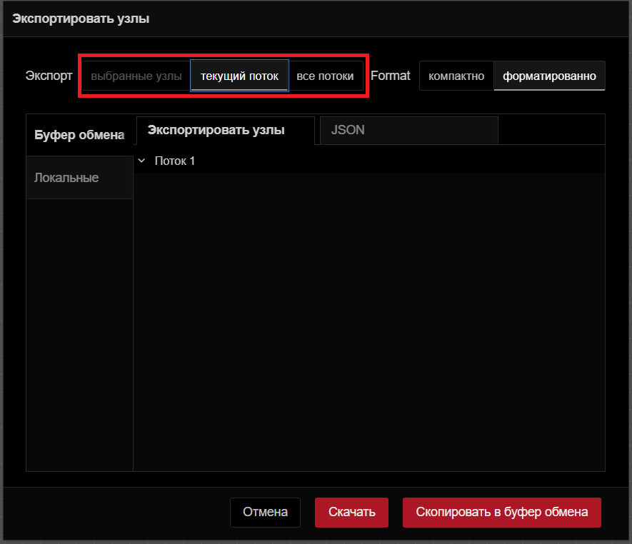
выбранные узлы: Выбор этой опции позволяет экспортировать только выбранные узлы из потока.
текущий поток: Выбор этой опции позволяет экспортировать приложение из текущей рабочей области потока.
все потоки: Выбор этой опции позволяет экспортировать поток из всех потоков в данном экземпляре.
В верхней части вы увидите две вкладки:
Экспортировать узлы: Эта вкладка позволяет увидеть узлы и потоки, которые вы собираетесь экспортировать.
JSON: Эта вкладка покажет поток в формате JSON, который вы собираетесь экспортировать.

компактно: Это уплотнит ваш JSON-файл потока в одну строку.
форматированно: Это отформатирует JSON-файл потока, сделав его более удобным для чтения или проверки.
С левой стороны после буфера обмена вы найдете еще опцию:

Локальные: Эта опция позволяет создать коллекцию потоков, которые вы создали в текущем экземпляре U-Logic. Вы можете создать новую папку, нажав на значок с тремя точками в правом верхнем углу и выбрав «Новая папка». Кроме того, внизу вы найдете поле ввода, которое позволяет изменить имя файла потока. Нажатие на «Экспорт в библиотеку» сохранит его в коллекции. Теперь вы можете получить доступ к своей коллекции в том же экземпляре.
Поиск в потоках

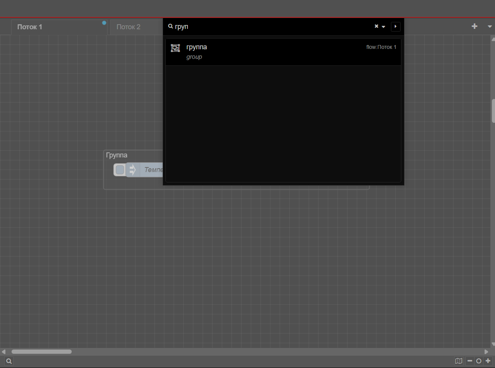
Эта опция позволяет выполнять поиск групп потоков, созданных в этом экземпляре U-Logic.
Конфигурационные узлы

При нажатии на эту опцию откроется вкладка «конфиг» боковой панели, которая позволит вам управлять всеми узлами конфигурации текущего экземпляра U-Logic.
Потоки

Эта опция позволяет управлять вкладками потока.
Добавить: добавляет новую вкладку потока.
Edit: Редактирует текущую вкладку потока.
Удалить: удаляет текущую вкладку потока.
Подпотоки

Эта опция позволяет создать подпоток.
Создать подпоток: создает новую вкладку подпотока.
Выделение в подпоток: преобразует выбранные узлы в подпоток.
Группы

Эта опция позволяет управлять группами потоков.
Сгруппировать выделение: группирует выбранные узлы.
Разгруппировать выделение: разгруппирует выбранную группу потоков.
Объединить выделение: объединяет выбранные группы потоков.
Удалить из группы: удаляет выбранные узлы из группы.
Параметры

Вид: настройка параметров редактора и параметров интерфейса.
Язык: выберите язык для редактора U-Logic.
Restore zoom level on load: включение этой опции восстановит уровень масштабирования редактора при загрузке U-Logic.
Restore scroll position on load: включение этой опции восстановит позицию прокрутки редактора при загрузке U-Logic.
Показывать сетку: включите отображение сетки в рабочей области редактора.
Привязывать к сетке: включите привязку узлов к сетке.
Размер сетки: отрегулируйте размер квадратов сетки.
Показать статус узла: переключите, чтобы отобразить статус узлов в редакторе.
Показывать метки у недавно добавленных узлов: переключите, чтобы метки недавно добавленных узлов стали видимыми
Показать советы: переключите, чтобы отобразить подсказки в редакторе.
Show guided tours for new versions: включите пошаговые руководства для новых версий U-Logic.
Клавиши: настройте сочетания клавиш для эффективной навигации и работы в U-Logic.
Сочетание клавиш
Эта опция перенаправляет вас в интерфейс, где вы можете настроить сочетания клавиш для эффективной навигации и работы в экземпляре U-Logic.
Вебсайт U-Logic
Эта опция перенаправит вас на официальный сайт U-Logic.
v4.0.9
Эта опция отображает журнал изменений для текущей версии U-Logic на вкладке «Change Log» боковой панели, подробно описывая, что было изменено или исправлено по сравнению с предыдущими версиями.
Палитра узлов редактора
Палитра узлов — это левая боковая панель, которая содержит все доступные узлы.
Панель поиска

Расположенная в верхней части палитры строка фильтра узлов позволяет быстро находить узлы по их названию.
Категории узлов
Палитра узлов разделена на несколько категорий, каждая из которых содержит коллекции узлов. Подпотоки категоризируются в разделе «Подпотоки».
Вы можете свернуть или развернуть категории, нажав на нужную категорию.
Свернуть все категории
Внизу палитры вы найдете два значка со стрелками. Нажатие на левый значок со стрелкой вверх свернёт все категории.
Развернуть все категории
Нажатие на значок со стрелкой вниз развернет все категории обратно в состояние по умолчанию.
Показать/скрыть палитру
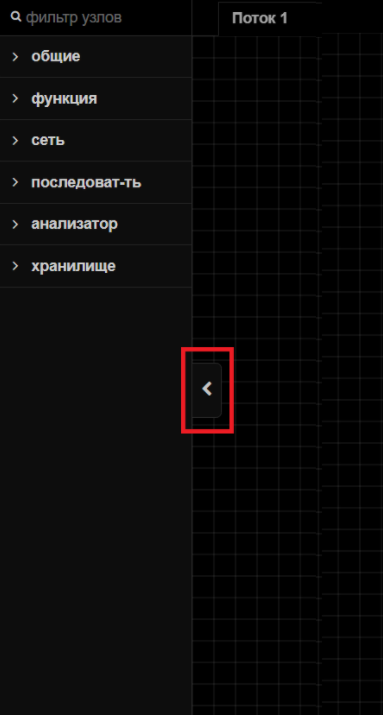
Нажатие этой кнопки скрывает боковую панель палитры. Чтобы снова ее отобразить, нажмите на кнопку еще раз.
Рабочее пространство редактора
Рабочая область — это основная область редактора, в которой вы создаете потоки приложений, перетаскивая узлы из палитры.

Просмотреть инструменты

В рабочем пространстве в правом нижнем углу есть инструменты просмотра. Сюда входят кнопки увеличения (Ctrl++) и уменьшения (Ctrl+-) для управления видом рабочего пространства и сброса уровня масштабирования до значения по умолчанию.
Кроме того, он предоставляет навигатор представлений, который позволяет вам видеть уменьшенное изображение всего рабочего пространства. В этом представлении вы также можете видеть текущую видимую область рабочего пространства в редакторе. Чтобы перейти к определенной области рабочего пространства, щелкните эту область в навигаторе представлений.
Search flows


В левом нижнем углу рабочей области вы увидите значок поиска. Нажатие на него откроет всплывающее окно, позволяющее быстро искать потоки в вашем экземпляре U-Logic по их имени. Вы можете открыть это диалоговое окно, нажав Ctrl + F.
Поток

Поток представлен в виде вкладки в рабочей области редактора, предоставляя новое рабочее пространство для создания приложений путем соединения узлов. «Поток» также неформально используется для описания одного набора соединенных узлов. Таким образом, поток (вкладка) может содержать несколько потоков (наборов соединенных узлов), но формально поток является родительской группой нескольких соединенных узлов. Поток может иметь имя и описание, которые будут отображаться на информационной боковой панели.
Добавление потока

Чтобы создать родительский поток, нажмите на значок «+» в правом верхнем углу, или воспользуйтесь опцией добавления потока в главном меню при помощи раздела «Потоки»
Редактирование свойств поиска
Чтобы изменить свойства потока, дважды щелкните вкладку потока, чтобы ввести его имя и описание в появившейся всплывающей форме.
Удаление потока

Чтобы удалить поток, дважды щелкните по нему. В появившемся всплывающем окне нажмите кнопку «Удалить» в верхнем левом углу.

Либо щелкните правой кнопкой мыши вкладку потока и выберите в меню пункт «Удалить».
Включение и выключение потоков
Чтобы включить или отключить поток, дважды щелкните на вкладке потока. Нажмите кнопку «Отключено» в нижнем левом углу или кнопку «Включено», если он уже отключен.

Либо щелкните правой кнопкой мыши по вкладке потока и выберите в меню «Disable flow/Enable flow». Отключенные потоки не выполняются при развертывании.
Переупорядочение потоков
Потоки можно переупорядочить, щелкнув и перетащив вкладку потока в нужную позицию. Дополнительные параметры меню вкладки потока можно получить, щелкнув значок раскрывающейся стрелки в правом верхнем углу.
Подпоток

Подпоток в U-Logic — это набор узлов, которые свернуты в один узел в рабочей области. Он позволяет группировать набор узлов в повторно используемую единицу. Это помогает в организации потоков, содействии повторному использованию и упрощении сложных конструкций потоков путем инкапсуляции нескольких узлов в единое представление узла более высокого уровня.
Примечание
Подпоток не может содержать экземпляр самого себя — ни напрямую, ни косвенно.
Создание подпотока

Чтобы создать подпоток, в разделе «Подпотоки» выберите «Создать подпоток» в главном меню.

Он создаст для вас окно подпотока, похожее на вкладку потока.
Редактирование подпотока
Чтобы открыть диалоговое окно редактирования подпотока, дважды щелкните по узлу подпотока, затем щелкните «Изменить шаблон подпотока». Вы можете дать имя для этого подпотока, добавить описание, щелкнув в правом верхнем углу
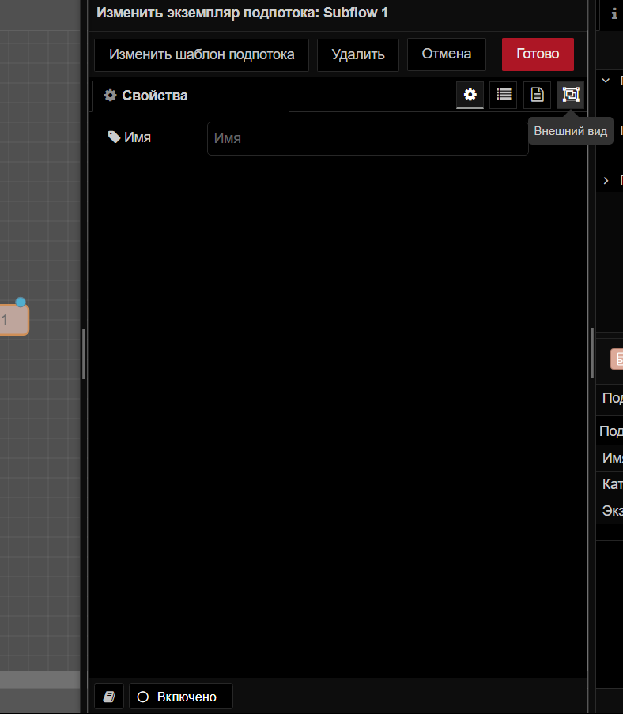
опцию «Описание», а также настроить внешний вид, нажав на опцию «Внешний вид» в правом верхнем углу.

Удаление подпотока

Чтобы удалить подпоток, нажмите кнопку «удалить подпоток» в верхней части вкладки подпотока.
Преобразование узлов в подпоток

Если у вас есть узлы на рабочем пространстве и вы хотите создать из них подпоток, вы можете выбрать их, нажав левую клавишу мыши и нарисовав вокруг них прямоугольник. Затем нажмите на Подпотоки -> Выделение в подпоток в главном меню.
Примечание
Провода, входящие в выборку, должны быть подключены к одному узлу, поскольку результирующий узел подпотока может иметь не более одного входа.
Входы и выходы

Входы и выходы подпотока изображены серыми квадратными узлами, которые могут быть соединены в рабочем пространстве подпотока как обычные узлы. Верхняя панель инструментов предлагает функции для добавления и удаления этих узлов. Подобно узлам обычного потока, каждый подпоток может иметь максимум один вход, но может вмещать несколько выходов.
Статус узла
Узел Status используется для обновления статуса подпотока. Этот узел статуса можно редактировать как обычные узлы потока. Этот узел использует входные данные, msg.payload которые могут быть либо простой строкой, либо объектом Status.
Узлы

Узел — это фундаментальный строительный блок, используемый для создания потоков. Каждый узел представляет собой отдельную часть функциональности или определенное действие, которое может быть выполнено в потоке.

Узлы могут иметь один входной и несколько выходных портов, соединенных проводами, которые определяют поток данных внутри потоков. Как входные, так и выходные узлы могут подключаться к нескольким проводам.

Некоторые узлы имеют кнопки либо слева, либо справа. Например, узел inject имеет кнопку слева, а узел debug — справа. Функция этих кнопок различается между узлами.
Кроме того, некоторые узлы отображают статус внизу со значками, указывающими на их статус выполнения.


Все узлы в U-Logic обозначают ошибки красным треугольником, неразвернутые изменения — синим кружком.
Добавление узлов в рабочее пространство
Добавить узлы в рабочую область можно тремя способами:
Перетаскивание из палитры
Узлы можно добавлять из палитры узлов U-Logic, перетаскивая их на рабочую область.
Использование диалогового окна быстрого добавления
Редактор U-Logic предоставляет быстрый и простой способ добавления узлов с помощью палитры:
Нажмите
Ctrl/⌘и щелкните по рабочей области.Выберите нужный узел в диалоговом окне, которое содержит все доступные узлы из основной палитры узлов.
Используйте строку поиска для быстрого поиска узлов.
При рисовании провода от одного узла оставьте провод на рабочем пространстве, чтобы подключить его к узлу, который будет добавлен с помощью того же диалогового окна быстрого добавления.
Импорт из библиотеки или буфера обмена
Узлы также можно добавлять, импортируя их из командной или локальной библиотеки или используя буфер обмена (главное меню -> импорт).
Редактирование свойств узла

Чтобы настроить свойства узла, дважды щелкните по нему или выберите узел и нажмите Enter. Появится всплывающая форма для настройки узла. Параметры конфигурации различаются в зависимости от типа узла.

При нажатии на вторую из трех опций в правом верхнем углу открывается вкладка «Описание», позволяющая написать описание в формате Markdown, которое будет отображаться на боковой панели информации.

При нажатии на третий параметр открывается вкладка для изменения внешнего вида узла, например, для изменения значков, присвоения имен входным и выходным портам и переключения видимости меток.
Включение и отключение узлов

Чтобы включить или отключить узлы, дважды щелкните по узлу и нажмите нижнюю кнопку «Включено» или кнопку «Отключено», если они уже включены.
Доступ к справочной информации Node

Чтобы получить доступ к справочной информации об узле, дважды щелкните по узлу и щелкните нижний левый значок «Показать справку», который отображает информацию, связанную с этим узлом, на информационной боковой панели.
Конфигурационные узлы
Узлы конфигурации в U-Logic хранят конфигурации, общие для нескольких узлов в потоке.
Примечание
Узлы конфигурации не шифруют данные после конфигурации, что потенциально может раскрыть конфиденциальную информацию при неправильном распространении.
Узлы конфигурации можно добавлять с помощью диалогового окна редактирования узлов, требующих настройки:

Нажмите на значок «+» рядом со значком карандаша и полем с текстом.
Введите необходимую информацию в диалоговом окне редактирования и нажмите «Добавить».
Узлы конфигурации не видны в рабочей области, как другие узлы, но ими можно управлять на вкладке узлов конфигурации на боковой панели.

Чтобы узнать, сколько узлов используют определенную конфигурацию, проверьте информацию в нижнем колонтитуле диалогового окна редактирования узла конфигурации.
Кроме того, как и общие узлы, узлы конфигурации можно отключать и включать таким же образом.
Провода
«Провода» относятся к соединениям, которые связывают узлы вместе, чтобы определить поток данных. Эти провода визуально представляют направление и поток информации от одного узла к другому в потоке U-Logic.
Соединение узлов вместе
Чтобы соединить узлы с помощью проводов, щелкните левой кнопкой мыши на выходном порту узла и перетащите провод к входному порту назначения. Кроме того, если вы нажмете Ctrl/⌘ и левую клавишу мыши на входном или выходном порту, вам не нужно будет удерживать левую клавишу мыши или любую другую кнопку для перетаскивания провода. Чтобы подключить его к порту назначения, нажмите левую клавишу мыши на порту назначения. Если клавиша Ctrl/⌘ останется нажатой после подключения к порту назначения, и если узел этого порта имеет выходной порт, будет перетащен новый провод.
Провода можно подключать от входного порта к выходному порту, а не от входного порта к входному порту или от выходного порта к выходному порту.
Удаление проводов
Чтобы удалить провода, щелкните левой кнопкой мыши, чтобы выбрать первый провод. Чтобы выбрать несколько проводов, нажмите и удерживайте клавишу, Ctrl/⌘ щелкая каждый провод левой кнопкой мыши. Если вы используете только левую кнопку мыши, вы можете выбрать только один провод за раз. После выбора проводов нажмите клавишу delete или backspace, чтобы удалить их.
Движущиеся провода
Чтобы отключить провод от порта, выберите провод, щелкнув по нему. Затем нажмите и удерживайте клавишу Shift , пока левая клавиша мыши нажата на порту. При перетаскивании мыши вы увидите, что провод отключается от порта и может быть подключен к другому порту.
Если к порту подключено несколько проводов, и при нажатии кнопки с удерживаемой клавишей Shift ни один из них не выбран, то будут перемещаться все провода.
Резка проводов
Провода также можно удалить, разрезав их. Это можно сделать, удерживая клавишу Alt/Option, а затем нарисовав линию разрезания, удерживая левую кнопку мыши.
Отсоединение узлов
Сохранение провода при удалении узла
Для этого нажмите и удерживайте клавишу Ctrl/⌘, выберите узел, щелкнув левой клавишей мыши, а затем нажмите клавишу delete или backspace.
Отсоединение узла от проводов
Чтобы использовать эту опцию, необходимо задать сочетание клавиш для действия «Detach Selected Nodes»
Группы

В U-Logic можно создавать группы для лучшей организации, содержащие один объект с включенными конфигурациями узлов в редакторе.
Создание группы потоков

Чтобы создать группу потоков, выберите узлы (удерживая клавишу Ctrl или рисуя вокруг них прямоугольник). Перейдите Группы -> Сгруппировать выделение в главном меню или нажмите Ctrl + Shift + G.
Редактирование свойств группы

Группа потока может иметь имя, цвет фона и метку границы, видимую в рабочей области. По умолчанию она имеет серую границу без фона или имени.
Чтобы задать стиль и имя группы, дважды щелкните по ней. Введите имя, выберите цвета контура и фона в свойстве заливки, настройте положение и цвет метки, затем щелкните «Готово» в правом верхнем углу.
Добавление описания

Чтобы добавить описание в группу, дважды щелкните по ней. Выберите третий вариант в правом верхнем углу всплывающего окна под кнопкой «Готово». Введите описание в формате Markdown.
Добавление узлов в группу
Чтобы добавить узлы в существующую группу, перетащите их в группу. Это можно делать по одному узлу за раз. Группы также могут быть вложены друг в друга таким же образом.
Удаление узлов из группы
Чтобы удалить узлы из группы, выберите узлы и перейдите Группы -> Удалить из группы в главном меню. Аналогично удалите группу из другой группы. Или щелкните по узлу, удерживайте клавишу Alt и перетащите его за пределы группы.
Объединение групп

Чтобы объединить несколько групп в одну, выберите группы. Перейти к главному меню и выбрать раздел Группы -> Объединить выделение.
Разгруппировка выбранных узлов

Чтобы разгруппировать узлы из группы, выберите узлы. Перейти к главному меню в раздел Группы -> Разгруппировать выделение.
Выбор
Редактор U-Logic предоставляет простой интерфейс для выбора узлов и проводов на рабочем пространстве.
Узел можно выбрать или отменить выбор, щелкнув по нему. Чтобы выбрать несколько узлов, нажмите Ctrl/⌘ клавишу и выберите нужные узлы. Чтобы выбрать все узлы в рабочей области, щелкните Ctrl+A.
Инструмент «Лассо»

U-Logic предоставляет инструмент лассо для более быстрого выбора. Чтобы использовать инструмент лассо, нажмите левую клавишу мыши и перетащите курсор, затем вы можете выбрать несколько узлов, нарисовав вокруг них прямоугольник.
Выбор подключенных узлов
Чтобы выбрать все подключенные к определенному узлу узлы, нажмите Shift и щелкните по середине этого узла.
Выбор всех вышестоящих узлов
Чтобы выбрать все подключенные узлы, которые находятся перед этим конкретным узлом, нажмите Shift и, удерживая ее, щелкните левую часть этого узла.
Выбор всех нижестоящих узлов
Чтобы выбрать все подключенные узлы, которые находятся после данного конкретного узла, нажмите Shift и, удерживая ее, щелкните правую часть этого узла.
Выбор потоков

Чтобы выбрать вкладки потока, нажмите клавишу Ctrl/⌘ и, удерживая ее, щелкните на вкладке потока, которую вы хотите выбрать. Теперь вы можете удалить, экспортировать или скопировать их все вместе.
Боковая панель редактора
Боковая панель расположена на правой стороне редактора U-Logic. Она содержит набор различных инструментов, которые упрощают использование U-Logic, например, управление узлами, конфигурация, хранилище контекста и многое другое.

Инструменты, доступные на боковой панели, называются панелями.
Панели по умолчанию
Боковая панель U-Logic поставляется со следующими панелями по умолчанию:
Панель «Информация»
На информационной панели отображается информация обо всех потоках, узлах, присутствующих в них, подпотоках и узлах, присутствующих в них, а также узлах глобальной конфигурации в древовидной структуре.
Если навести курсор на любой элемент в этой древовидной структуре, вы увидите несколько опций, которые упрощают и ускоряют работу, например, Вызвать действие (для активации узлов, если у наведенного узла есть кнопка), Включить/Отключить (для отключения и включения наведенного узла), Show/Hide (для скрытия и отображения наведенного элемента в рабочей области), Lock/Unlock (для блокировки и разблокировки наведенного элемента), Найти в рабочей области (для быстрого поиска наведенного элемента в рабочей области). Эти опции представлены различными значками.
Поиск в потоках
Панель «инфо» имеет строку поиска в верхней части, которая позволяет легко искать потоки, подпотоки и узлы на информационной панели.
Кроме того, он предоставляет фильтр, позволяющий фильтровать эти элементы по различным параметрам, таким как
Узлы конфигурации
Неиспользуемые узлы конфигурации
Modified nodes and flows
Недействительные узлы
Неизвестные узлы
Неиспользуемые подпотоки
Hidden flows
Current flow
Свойства элемента
Если щелкнуть элемент в древовидной структуре информационной панели, на второй вкладке панели «инфо» вы увидите идентификатор потока, если выбранный элемент является потоком, а также идентификатор узла и тип, если это узел.
Значение узла можно копировать с помощью опции копирования справа от значения
Чтобы увидеть дополнительную информацию, нажмите кнопку «Показать больше», которая отобразит дополнительную информацию обо всех свойствах узла.
В верхней части вы увидите три опции: первая — «Показать справку», при нажатии на которую вы перейдете на панель справки и увидите файл readme, предоставленный автором для выбранного элемента; вторая опция скопирует URL-адрес выбранного элемента, вы можете использовать эту функцию, когда хотите указать или обсудить определенный элемент в рабочей области с членом вашей команды; и третья опция позволяет вам найти этот элемент в рабочей области.
Панель «Справка»
Эта панель позволяет просматривать readme файл. Макет этой панели немного похож на информационную панель и разделен на две вкладки.
Первая вкладка представляет собой древовидную структуру с двумя основными темами: «U-Logic» и «Справка по узлам». U-Logic включает в себя Change Log и Welcome Toursl.
На второй вкладке отображаются файлы readme выбранного узла.
Скрытие тем
Чтобы скрыть/показать первую вкладку панели справки, нажмите на верхнюю левую кнопку «Hide topics».
Просмотр документации Node на вкладке «Справка»
Чтобы просмотреть файлы readme на панели справки для узлов, щелкните один раз по узлам в рабочей области или щелкните элемент узла в древовидной структуре раздела «Справка по узлам».
Панель «Отладочные сообщения»
Панель отладки отображает сообщения, выводимые узлом debug. Эта панель помогает легко отлаживать ваше приложение.
Когда сообщения печатаются на панели отладки, каждое сообщение включает дату и время, имя узла, который напечатал это сообщение, имя свойства, его тип данных и значение.
Фильтрация отладочных сообщений
В верхней части панели отладки вы увидите опцию фильтра с тремя параметрами, которая позволяет отображать только те сообщения, которые вам нужны:
все узлы: при выборе этого параметра будут отображаться сообщения, распечатанные всеми узлами.
выбранные узлы: эта опция позволяет выбрать конкретные узлы отладки, сообщения которых вы хотите видеть на панели отладки.
текущий поток: при выборе этого параметра будут печататься только сообщения, напечатанные узлами, присутствующими в текущем потоке.
Примечание
Боковая панель «отладка» может отображать только 100 последних сообщений. Если боковая панель в данный момент отображает отфильтрованный список сообщений, скрытые сообщения все равно учитываются в пределе 100.
Очистка сообщений
Чтобы очистить сообщения, нажмите на кнопку «Очистить журнал» в правом верхнем углу. Или нажмите на ctrl+alt+l.
Открытие отдельного окна
Чтобы открыть панель отладки в отдельном окне, щелкните по правой нижней кнопке «Открыть в новом окне» со значком компьютера. Щелчок по нему откроет панель отладки в новом окне браузера, что позволит легко просматривать и управлять сообщениями отладки.
Панель «узлы конфигураций»
Панель узлов конфигурации показывает список всех узлов конфигурации, добавленных к текущему экземпляру U-Logic. Все узлы конфигурации организованы по их области действия, например, по всем потокам, по определенному потоку и подпотоку.
Каждый узел конфигурации на панели узлов конфигурации отображает тип и метку этого узла, а также количество текущих узлов, использующих эту конфигурацию.
Эта панель конфигурации также обеспечивает легкий доступ к диалоговому окну редактирования узлов конфигурации. Чтобы открыть его, дважды щелкните по узлам конфигурации на панели.
Для доступа к этой панели узлов конфигурации нажмите Ctrl/⌘+g +c.
Фильтрация узлов конфигурации
Панель конфигурации узлов предоставляет возможность фильтровать узлы по всем и неиспользуемым.
Панель «Контекстные данные»
Эта панель отображает переменные контекста по их области действия. Каждая переменная включает такие данные, как дата и время, ее хранилище, а также имя и значение. Чтобы получить доступ к этой панели, нажмите ctrl/⌘+g+x.
Обновление переменных контекста
Чтобы обновить контекстные переменные, нажмите кнопку обновления, расположенную в правом верхнем углу каждой вкладки области действия, или, чтобы обновить определенную переменную, наведите на нее курсор и нажмите кнопку обновления, которая появляется справа от нее.
Удаление контекстных переменных
Чтобы удалить контекстную переменную, наведите указатель мыши на переменную, которую вы хотите удалить, и нажмите кнопку удаления, которая появляется справа от нее.
Копирование свойств и значений
Чтобы скопировать имя этой переменной, наведите на нее курсор и нажмите первую кнопку, которая появится справа.
Чтобы скопировать значение этой переменной, наведите на нее курсор и нажмите вторую кнопку, которая появится справа.
Сокрытие боковой панели
Чтобы скрыть боковую панель, нажмите на кнопку «Показать/скрыть боковую панель». Чтобы снова отобразить ее, нажмите на кнопку переключения еще раз. В качестве альтернативы вы можете использовать сочетание клавиш ctrl/⌘+space.
Изменение размера боковой панели
Чтобы изменить размер боковой панели, наведите указатель мыши на границу боковой панели, пока курсор не изменится. Затем нажмите левую кнопку мыши и удерживайте ее во время изменения размера.
Работа с сообщениями
Понимание сообщений U-Logic
U-Logic полагается на передачу сообщений между узлами для создания динамичных рабочих процессов IoT, автоматизации и обработки данных. Каждое сообщение содержит данные, которые узлы изменяют, обрабатывают или анализируют, поэтому понимание структуры и обработки этих сообщений является ключевым. Неправильное управление сообщениями может привести к скрытым ошибкам, таким как перезапись данных, бесконечные циклы или сбои. Чтобы избежать ошибок и создавать надежные потоки, важно знать, как эффективно работать с сообщениями.
В этом руководстве будет рассмотрена внутренняя работа сообщений U-Logic, распространенные ошибки и лучшие практики для обеспечения плавного потока данных без ошибок.
Что такое сообщения U-Logic?
В U-Logic сообщения — это пакеты данных, которые перемещаются между узлами в вашем потоке. U-Logic работает на основе событий, что означает, что эмиттер событий инициирует события, а слушатель реагирует на них. В этом контексте узлы в U-Logic выступают как источники событий, так и слушатели, а сообщения служат средством, посредством которого эти события передаются. Эти сообщения представляют собой информацию, которую узлы читают, изменяют и на которую реагируют. Каждый узел обрабатывает эти сообщения и передает их следующему узлу в последовательности.
Сообщения важны, потому что они передают данные, которые управляют вашими рабочими процессами, будь то показания датчиков, ввод пользователя или ответы от API. В сущности, сообщения U-Logic представляют собой объекты JavaScript, которые являются простыми, но мощными структурами для управления и передачи данных в ваших потоках.
Понимание объектов JavaScript
JavaScript объект — это структура данных, используемая для хранения нескольких значений в одной переменной. Она состоит из пар ключ-значение, где каждый ключ (или свойство) связан с определенным значением. Такая организация позволяет вам легко группировать и получать доступ к связанным данным.
Например:
{
name: "Bob",
age: 24,
married: true
}
В этом примере , name, age и married являются свойствами объекта. Аналогично сообщения U-Logic используют эту структуру для организации и транспортировки данных в ваших потоках.
Анатомия сообщений U-Logic
В U-Logic сообщения по умолчанию именуются как msg, и узлы разработаны для работы с этим соглашением об именовании.
Сообщения U-Logic состоят из нескольких ключевых свойств, необходимых для обработки данных и связи между узлами:
msg._msgid: Уникальный идентификатор сообщения, автоматически назначаемый U-Logic. Он помогает отслеживать и отлаживать сообщения в потоке.msg.payload: Это основные данные сообщения. Они содержат основную информацию, которую обрабатывают и на основе которой действуют узлы, например показания датчиков или пользовательский ввод.msg.topic: Необязательное свойство, используемое для категоризации или идентификации сообщения. Может быть полезно для маршрутизации или фильтрации сообщений на основе их контекста. Это наиболее распространенные свойства, с которыми вы столкнетесь в U-Logic. При необходимости можно добавлять дополнительные свойства.
Свойство _msgid всегда присутствует, даже если вы отправляете пустой объект с одного узла на другой. Это свойство автоматически добавляется U-Logic для отслеживания сообщений в потоке. Однако важно отметить, что свойства payload и topic не всегда присутствуют в каждом сообщении. Их включение зависит от того, добавляет ли их узел. Большинство узлов в U-Logic, включая добавленные узлы, используют это payload свойство в качестве стандарта для коммуникации.
Типы данных в сообщениях U-Logic
При работе с сообщениями U-Logic важно понимать типы данных, с которыми вы столкнетесь. Поскольку сообщения всегда являются объектами JavaScript, само сообщение должно быть объектом, иначе U-Logic выдаст ошибку.
Однако возможно отправить null как сообщение. Это часто используется, когда вы не хотите отправлять какие-либо данные дальше по потоку, так как это null фактически останавливает распространение сообщения на последующие узлы.
Говоря о свойствах сообщений, их значениями могут быть любые типы данных, поддерживаемые JavaScript, такие как строка, число, массив, логическое значение, объект, буфер и другие сложные типы данных.

Как клонировать сообщения или свойства сообщений
Клонирование в U-Logic подразумевает создание копии сообщения или его свойств, чтобы вы могли работать с копией независимо от оригинала. Это полезно, когда вам нужно изменить данные, не затрагивая исходное сообщение, или когда вам нужно отправить измененную версию сообщения в разные части вашего потока.
Использование узла change
Узел change в U-Logic предоставляет удобный способ изменения и клонирования свойств сообщений. Однако важно отметить, что вы не можете клонировать весь msg объект сразу; вам нужно копировать его свойства по одному. Кроме того, узел change может клонировать свойства только в другое свойство msg, или в свойство контекста потока/глобального контекста.
Вот как можно использовать узел change для обработки свойств сообщения:
Дважды щелкните узел change , чтобы открыть диалоговое окно его конфигурации.
Вы увидите интерфейс с существующим элементом, добавленным по умолчанию.
С левой стороны поля вы увидите такие опции, как «Установить» , «Изменить» , «Удалить» и «Переместить» . Вы можете использовать эти опции для выполнения соответствующих операций над сообщением.
Чтобы клонировать свойство
msg.payloadвflow.data, выберите действие «Установить» . В первом поле «to the value» введитеpayload, выберите flow и введите данные. Для клонированияmsgсвойств в новыеmsgсвойства выберитеmsgво втором поле и укажите новое имя свойства.
Для получения дополнительной информации об узле change и для изучения других действий, таких как Удалить , Переместить и Изменить , обратитесь к разделу по узлу change.
Использование узла function
В узле функции вы можете клонировать сообщения или определенные свойства с помощью JavaScript. Вот как это можно сделать:
// Клонировать все сообщение
var newMsg = RED.util.cloneMessage(msg);
// Изменить клон при необходимости, изменение клона не повлияет на оригинал
newMsg.payload = "Измененные данные";
// Вернуть оригинал
return msg;
Примечание
Прямое назначение, например, let newMsg = msg; не создает настоящего клона. Вместо этого оно создает новую ссылку на тот же объект. Это означает, что изменения в newMsg также повлияют на msg, поскольку оба ссылаются на одни и те же данные.
// Присвоить ссылку на оригинальное сообщение
var newMsg = msg;
// Изменение newMsg повлияет на оригинальное сообщение
newMsg.payload = "Измененные данные";
// Вернуть оригинал
return msg;
Если вам нужно клонировать только определенные свойства сообщения, вы можете сделать это, вручную скопировав нужные вам свойства:
// Клонировать определенные свойства сообщения
var newMsg = {};
newMsg.payload = msg.payload; // Копировать payload
newMsg.topic = msg.topic; // Копировать topic
// Вернуть новое сообщение с клонированными свойствами
return newMsg;
Добавление новых свойств к сообщениям
Сообщения U-Logic, как упоминалось ранее, являются объектами JavaScript, что делает их очень гибкими для настройки. Вы можете добавлять столько свойств, сколько необходимо, к сообщению, что позволяет вам переносить дополнительные данные через ваш поток. Это может быть особенно полезно для улучшения информации, доступной для нижестоящих узлов, например, для включения метаданных, тегов или дополнительных деталей конфигурации.
Чтобы добавить новые свойства к сообщению, можно использовать узел change или узел function.
Узел change позволяет вам легко добавлять новые свойства к msg объекту без написания кода. Вот как это сделать:
Перетащите узел change в свой поток и дважды щелкните по нему, чтобы открыть конфигурацию.
Выберите действие «Установить» в раскрывающемся меню слева.
В поле справа введите новое название свойства (например,
msg.customData).В поле «to the value» введите значение, которое вы хотите присвоить этому свойству. Это может быть строка, число, логическое значение или даже выражение.
Если вы предпочитаете больший контроль, вы можете добавлять новые свойства непосредственно через узел function с помощью JavaScript.
// Добавить новое пользовательское свойство к сообщению
msg.customData = {
description: "Это описание",
timestamp: new Date().toISOString()
};
// Вернуть обновленное сообщение
return msg;
Обработка JSON сообщений
В U-Logic работа с JSON является обычным явлением, особенно при работе с API и данными IoT. JSON (JavaScript Object Notation) — это облегченный формат обмена данными, а U-Logic упрощает процесс отправки и получения объектов JSON.
При работе с U-Logic вы можете столкнуться с двумя формами JSON:
JSON Объект: это простой, структурированный объект JavaScript, которым можно легко манипулировать в U-Logic. Вы можете получить доступ к его свойствам, изменить его значения и передать его через различные узлы в вашем потоке.
JSON Строка: строка JSON — это сериализованная версия объекта JSON, обычно используемая при передаче данных между системами. В отличие от обычного объекта, вы не можете манипулировать строкой JSON напрямую так же, как вы бы это делали с объектом JavaScript.
Преобразование JSON строки в JSON объект
Чтобы обработать строку JSON как обычный объект JavaScript, сначала нужно преобразовать ее в объект JSON. U-Logic предоставляет узел json, который упрощает этот процесс. Узел json анализирует строку и преобразует ее в объект, позволяя вам обрабатывать ее как любые другие структурированные данные в вашем потоке.
Вот шаги для достижения этого:
Перетащите узел json на холст U-Logic.
Дважды щелкните узел json, чтобы настроить его.
Установите действие «Всегда преобразовывать в объект JavaScript» и нажмите «Готово».
Подключите вход узла json к выходу узла, отправляющего строку JSON.
Подключите выход узла json ко входу следующего узла в вашем потоке, которому требуется обработанный объект JSON.
Выполнив эти шаги, узел json преобразует входящую строку JSON в пригодный для использования объект JavaScript в потоке U-Logic.
Распространенные ошибки, которых следует избегать при работе с сообщениями U-Logic
При работе с сообщениями в U-Logic избегайте следующих распространенных ошибок, чтобы гарантировать бесперебойную и ожидаемую работу ваших потоков:
Добавление свойств к необъектному свойству: Попытка добавить свойства к свойству, не являющемуся объектом (например, строке или числу), может привести к ошибкам или неожиданному поведению. Всегда проверяйте, работаете ли вы с объектами при добавлении свойств.
Неправильный пример:
msg.payload = 'stringValue';
msg.payload.newProperty = 'value'; // Ошибка: 'stringValue' не является объектом
return msg;
Правильный пример:
msg.payload = {}; // Инициализация как объект
msg.payload.newProperty = 'value'; // Теперь безопасно добавлять свойства
return msg;
Эта ошибка часто возникает в узле change, где узел inject отправляет данные msg.payload как string или number (например, «hello world»), а узел change пытается добавить свойство, msg.payload как если бы это был объект.
Примечание
Неправильно: добавление свойства к типу, не являющемуся объектом (например, строке)
Правильный подход:
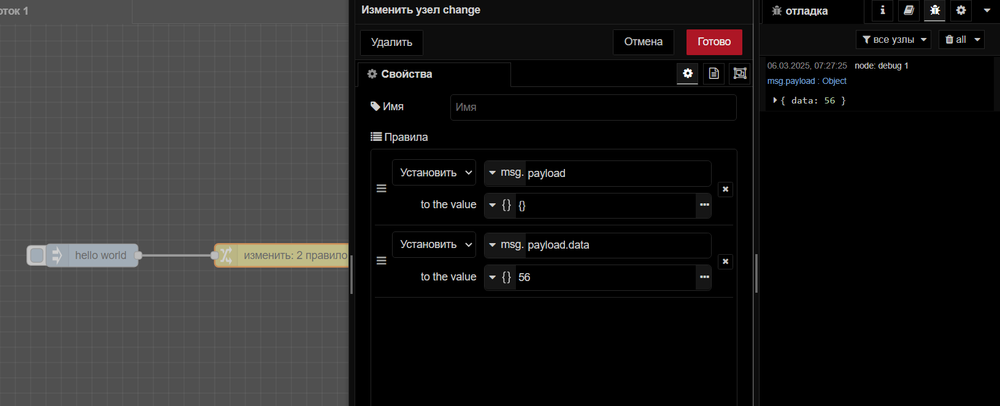
Примечание
Правильно: Инициализируйте свойство как объект перед добавлением свойств.
Перезапись объекта сообщения (
msg): Некоторые пользователи ошибочно перезаписывают весьmsgобъект, а не изменяют определенные свойства. Это может привести к потере важного контекста или свойств.
Пример неправильной перезаписи:
msg = { newProperty: 'value' }; // Перезаписывается весь объект msg
return msg;
Вместо этого измените определенные свойства:
msg.newProperty = 'value';
return msg;
Возврат неправильного типа данных: потоки U-Logic ожидают, что сообщения будут переданы как объекты. Возврат неправильного типа данных, например строки или числа, прерывает поток и выдает ошибку.
Забывание вернуть сообщение: в узлах function, если вы измените сообщение, но забудете вернуть его, поток остановится на этом узле.
Освоив тонкости объектов сообщений U-Logic и избежав распространенных ошибок, вы сможете создавать более надежные и эффективные рабочие процессы. Понимание того, как работать с данными JSON, клонировать сообщения и правильно обрабатывать свойства, гарантирует, что ваши данные будут бесперебойно передаваться между узлами.
Продолжая изучать и разрабатывать приложения с помощью U-Logic, помните об этих передовых методах, чтобы поддерживать безошибочные и высокопроизводительные процессы.
Программирование
Концепции программирования U-Logic
If-Else: документация If-Else объясняет, как реализовать условную логику в U-Logic. Это руководство проведет вас через использование узлов function и switch для создания динамических потоков, основанных на решениях.
Преобразование данных: документация по преобразованию данных охватывает методы фильтрации, отображения, сортировки и сокращения данных в U-Logic. Она объясняет, как преобразовывать данные в ваших потоках, предоставляя практические примеры по отображению массивов и обработке данных.
Циклы: документация по циклам объясняет, как реализовать повторяющиеся операции в U-Logic. Это руководство проведет вас через использование узлов for и while для создания циклов, которые позволяют обрабатывать массивы данных или выполнять задачи многократно.
Преобразование данных
U-Logic — это визуальная платформа программирования, известная своим удобным интерфейсом и подходом low-code, широко используемым для разработки приложений IoT. В приложениях IoT эффективная обработка данных имеет решающее значение, а такие операции, как фильтрация, отображение, сортировка и сокращение, необходимы для упрощения преобразований данных. Однако многие пользователи испытывают трудности с реализацией этих операций, придерживаясь подхода low-code, часто полагаясь на функциональные узлы, которые могут вносить ненужную сложность. В этом руководстве будет показано, как фильтровать, отображать, сортировать и сокращать данные с помощью U-Logic для эффективного преобразования данных, придерживаясь подхода low-code.
Что такое Low-Code
Low-code — это подход к разработке программного обеспечения, который требует минимального или нулевого кодирования для создания приложений и процессов. Вместо использования сложных языков программирования вы используете визуальные интерфейсы с базовой логикой и возможностями перетаскивания.
Более подробную информацию можно найти здесь:
Зачем вам нужно научиться фильтровать, сопоставлять, сортировать и сокращать данные?
Фильтрация, отображение, сортировка и сокращение являются важнейшими функциями в обработке данных, поскольку они эффективно преобразуют, извлекают, организуют и агрегируют данные, что упрощает анализ и извлечение информации из наборов данных. Например, рассмотрим сценарий, в котором у вас есть массив данных датчиков, извлеченных из базы данных. Данные выглядят примерно так:
[
{
"timestamp": "2024-06-17T10:00:00Z",
"temperature": 298.15
},
{
"timestamp": "2024-06-17T11:00:00Z",
"temperature": 299.15
},
{
"timestamp": "2024-06-17T10:30:00Z",
"temperature": 300.15
},
{
"timestamp": "2024-06-17T10:15:00Z",
"temperature": 301.15
},
{
"timestamp": "2024-06-17T10:45:00Z",
"temperature": 303.15
},
{
"timestamp": "2024-06-18T09:00:00Z",
"temperature": 297.15
},
{
"timestamp": "2024-06-18T10:00:00Z",
"temperature": 300.15
},
{
"timestamp": "2024-06-18T11:00:00Z",
"temperature": 301.15
},
{
"timestamp": "2024-06-18T12:00:00Z",
"temperature": 302.15
},
{
"timestamp": "2024-06-19T10:00:00Z",
"temperature": 298.15
},
{
"timestamp": "2024-06-19T11:00:00Z",
"temperature": 299.15
}
]
Однако вы заметили, что данные о температуре указаны в градусах Кельвина, а вам нужны они в градусах Цельсия. Кроме того, данные не упорядочены по временной метке, и вам нужны только данные за 17 июня. Наконец, вы хотите рассчитать среднюю температуру за этот день. Пользователи, не знакомые с основами U-Logic, могут использовать узел function, чтобы добиться этого, как показано ниже:

Использование узлов function не является неправильным, но оно усложняет ваши приложения. Поскольку не все в команде могут быть знакомы с JavaScript, это может ограничить круг лиц, которые могут решать бизнес-задачи. Чтобы сохранить простоту потока приложений, использование подхода с малым количеством кода для выполнения этих операций имеет решающее значение.
В следующих разделах будет рассмотрено, как выполнять эти операции, используя подход с минимальным кодированием.
Сопоставление
Сопоставление часто относится к процессу применения функции к каждому элементу в списке, массиве или другой коллекции для создания новой коллекции преобразованных элементов. Здесь, в данном контексте, необходимо преобразовать данные о температуре каждого объекта из градусов Кельвина в градусы Цельсия. Для выполнения отображения будут использованы узлы split, change и join.
Перетащите узел split на холст. Узел split разделит сообщение на последовательность сообщений, что позволит нам работать с каждым сообщением. Кроме того, узел «Разделить» привяжет метаданные к каждому разделенному объекту. Эти метаданные помогут узлу join объединить всю последовательность сообщений обратно в массив.
Перетащите узел change на холст и задайте его
msg.payload.temperatureкакpayload.temperature - 273.15выражение JSONata.
Теперь перетащите узел join на холст и установите «Режим» на «автоматический». Это автоматически объединит все сообщения, исходящие из узла split, в массив.
Фильтрация
Фильтрация — это процесс выбора определенных элементов из массива для создания нового массива. В U-Logic фильтрация достигается с помощью сопоставления и узла switch для маршрутизации на основе условий.
Перетащите узел switch и поместите его после узла change и перед узлом join.
Установите условие для проверки того,
msg.payload.timestampвключает ли сообщение «2024-06-17». Это условие гарантирует, что далее будут отправляться только сообщения, содержащие указанную дату в своей временной метке.Далее в узле коммутации отметьте опцию «воссоздать последовательность сообщений», которая восстановит
msg.partsметаданные, добавленные узлом split, если какие-либо сообщения будут потеряны узлом коммутации.


Сортировка
Сортировка, как следует из названия, означает упорядочивание элементов в определенном порядке. Этот порядок может быть возрастающим (от наименьшего к наибольшему), убывающим (от наибольшего к наименьшему) или основанным на любом определенном критерии. В U-Logic вы можете сортировать числа, алфавиты, массивы, строки и многое другое. Для выполнения сортировки нам нужно использовать узел sort U-Logic.
Перетащите узел sort на холст.
Установите ключ в
timestampкачестве выражения JSONata, а затем установите порядок «восходящий. Ключ устанавливается в качестве метки времени, поскольку необходимо сортировать данные на основе метки времени. Вы можете установить его в качестве температуры, если хотите сортировать на основе этого.
Сокращение
Сокращение относится к процессу объединения элементов структуры данных (например, массива) в одно значение. Оно включает в себя итерацию по элементам структуры данных и многократное применение функции объединения до тех пор, пока все элементы не будут обработаны.
Перетащите еще один узел split на холст.
Перетащите еще один узел join на холст.
Выберите режим «агрегация последовательности», установите «Агрегирующее выражение» на
$A+ payload.temperature, «начальное значение» на0и «Исправляющее выражение» на$A/$N

В этой конфигурации узел join настроен на режим сокращения последовательности. Начальное значение аккумулятора ($A) инициализируется до 0. По мере обработки каждого сообщения текущая температура (payload.temperature) добавляется к $A. После обработки всех сообщений накопленная сумма $A делится на общее количество сообщений ($N) для вычисления средней температуры.

If-Else
Принятие решений человеком часто направляется серией выборов «если это, то то» — будь то решение, что надеть в зависимости от погоды, или определение кратчайшего маршрута на работу в зависимости от трафика. Такая логика одинаково важна в системах, особенно тех, которые построены на U-Logic. Так же, как люди принимают решения на основе различных факторов, системы должны оценивать условия и выбирать соответствующий курс действий.
При разработке автоматизированных решений в U-Logic, возможность воспроизводить этот процесс принятия решений, подобный человеческому, имеет решающее значение. Внедряя логику If-Else, ваша система может разумно ориентироваться в различных сценариях, адаптируя свое поведение на основе получаемых входных данных. Это руководство покажет вам, как эффективно интегрировать логику If-Else в ваши потоки U-Logic, гарантируя, что ваша система сможет принимать разумные решения с учетом контекста — так же, как это делаете вы.
Понимание логики If-Else
Концепция логики If-Else возникла из потребности компьютеров принимать решения. По мере развития языков программирования, управление компьютером посредством различных действий на основе различных условий стало необходимым. Это привело к созданию условных операторов, которые позволяют программам выбирать различные пути в зависимости от определенных критериев.
Что за логика If-Else?
Логика If-Else — это способ принятия решений программами. Работает так:
Если определенное условие выполняется (например, «Температура выше 30°C?»), то выполнить набор действий (например, «Включить кондиционер»).
Иначе (если условие не выполняется) выполнить другой набор действий (например, «Выключить кондиционер»).
Такой подход позволяет системам адекватно реагировать на различные ситуации.
Реализация условных потоков в U-Logic: Практическое руководство
В U-Logic реализация логики If-Else позволяет создавать динамичные и отзывчивые потоки, которые реагируют на различные входные данные и условия. Независимо от того, автоматизируете ли вы умный дом, управляете устройствами IoT или разрабатываете сложные рабочие процессы, освоение условной логики имеет важное значение для создания интеллектуальных систем.
Для реализации логики If-Else в U-Logic можно использовать узел switch, который идеально соответствует подходу Low-Code. Однако другой способ добиться этого — использовать узел function, который обеспечивает большую гибкость и контроль при написании пользовательской логики JavaScript.
Использование узла switch
Узел switch в U-Logic используется для маршрутизации сообщений на основе определенных условий, предлагая простой, малокодовый подход к реализации условной логики в ваших потоках. Узел switch позволяет вам устанавливать правила с помощью визуального интерфейса, что делает его идеальным для пользователей, которые предпочитают более интуитивный метод обработки условий. Однако важно отметить, что узел switch представляет собой другую, независимую концепцию, известную как «оператор switch». Хотя он служит той же цели, что и логика If-Else, создавая условные потоки, он работает в рамках своей собственной парадигмы программирования.
Для демонстрации узла switch настроим поток для принятия решений на основе значения температуры. Будем направлять сообщения через различные выходы на основе пороговых значений температуры.
Перетащите узел inject на холст и задайте его
msg.payloadкак$random() * 100выражение JSONata; этот узел внедрения будет имитировать датчик температуры, генерируя случайное число.Перетащите узел switch на холст. Дважды щелкните по нему и установите «Свойство» на msg.payload.
Чтобы добавить правила, нажмите кнопку + Добавить в левом нижнем углу панели конфигурации. Вам будет предложено выбрать условие и ввести значение для сравнения. Добавьте следующие четыре правила и установите их для «проверка всех правил»:
Правило 1:
msg.payload > 30Правило 2:
msg.payload <= 30Правило 3:
msg.payload <= 20Правило 4:
msg.payload <= 10
Теперь перетащите другой узел switch и соедините его вход с выходом узлов switch 2 и 3. Второй узел switch добавляется из-за необходимости маршрутизации сообщений на основе диапазонов. Один узел switch не допускает множественных проверок в одном правиле, поэтому необходимо использовать другой узел switch для маршрутизации температуры на основе диапазонов. Добавьте следующие правила и установите для них значение «остановка после первого совпадения»:
Правило 1:
msg.payload > 20Правило 2:
msg.payload > 10
Теперь перетащите узлы debug и подключите их к выходам узлов switch в соответствии с нашим примером. Для сообщений больше 30 подключите узел debug к первому выходу первого узла switch. Для диапазона от 30 до 20 подключите узел debug к первому выходу второго узла Switch. Для диапазона от 20 до 10 подключите узел Debug ко второму выходу второго узла switch. Наконец, для сообщений меньше 10 подключите узел debug к четвертому выходу первого узла switch.
Разверните поток, нажав кнопку «Развернуть» в правом верхнем углу редактора U-Logic.
После развертывания нажмите кнопку на узле inject, чтобы запустить его. Узлы debug покажут маршрутизированные сообщения на основе значения температуры.
Обратите внимание, как сообщения направляются через различные выходы в зависимости от значения температуры. Теперь вы можете спросить, как обновить полезную нагрузку сообщения в зависимости от условия. Для этого вам нужно будет использовать узел change или узел function.

Поток U-Logic с использованием узла switch для маршрутизации сообщений на основе пороговых значений температуры.

Использование узла function
Узел function позволяет реализовать более сложную логику, написав JavaScript код. Он подходит, когда вам нужно больше контроля или когда необходимо проверить несколько значений вместе.
Для наглядности рассмотрим пример с температурой, где необходимо определить, следует ли включать или выключать кондиционер в зависимости от температуры:
Перетащите узел inject на холст и задайте его
msg.payloadкак выражение JSONata$random() * 100; этот узел внедрения будет имитировать датчик температуры, генерируя случайное число.Перетащите узел function на холст, дважды щелкните по нему и вставьте в него следующий код:
let Temperature = msg.payload;
if (Temperature > 30) {
msg.payload = "Turn on the air conditioner"; // Включить кондиционер
} else {
msg.payload = "No action required"; // Никаких действий не требуется
}
return msg;
Прежде чем двигаться дальше, давайте остановимся и разберемся, что происходит в коде и как msg.payload он используется.
В U-Logic msg.payload используется для передачи данных по потоку. Первоначально он содержит значение температуры, введенное узлом inject. Затем узел function обрабатывает это значение с помощью логики If-Else. Если температура превышает 30°C, msg.payload устанавливается в «Turn on the air conditioner», указывая на то, что кондиционер следует включить. Если температура составляет 30°C или ниже, msg.payload устанавливается в «No action required», указывая на то, что кондиционер следует оставить выключенным. Обновленный msg.payload передается следующему узлу, гарантируя, что система будет реагировать соответствующим образом на входные данные температуры.
Далее перетащите узел debug на холст и подключите его к выходу узла function. Это позволит вам увидеть результаты вашей условной логики в окне отладки U-Logic.
Разверните поток, нажав кнопку «Развернуть» в правом верхнем углу редактора U-Logic.
После развертывания нажмите кнопку на узле inject, чтобы запустить его. Вы должны увидеть вывод узла function в окне отладки, который будет показывать true или false в зависимости от значения температуры.
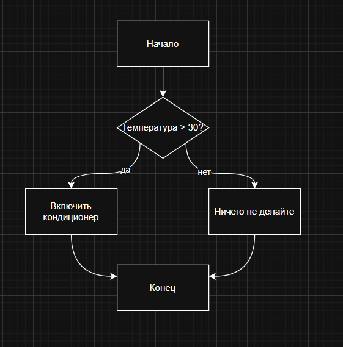
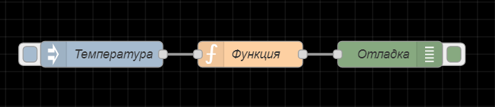 Поток U-Logic с использованием узла function для реализации простой логики If-Else для контроля температуры.
Обработка нескольких потоков с помощью узла function
Обработка простого одностороннего потока с использованием логики If-Else с узлом function была рассмотрена ранее, но что, если необходимо направлять сообщения по разным путям на основе различных условий и оценивать несколько значений при использовании узла function? В таких случаях узел function в U-Logic обеспечивает гибкость для написания полного кода JavaScript, что позволяет принимать более сложные решения. Кроме того, узел функции поддерживает настройку для нескольких выходных портов, что позволяет вам направлять сообщения в разные пункты назначения на основе различных условий.
Давайте обновим пример для обработки нескольких значений. В этом сценарии в наш процесс принятия решений будет включена как температура, так и влажность. Будет использовано несколько выходных портов в узле function для маршрутизации сообщений на основе различных условий.
Перетащите на холст еще один узел inject, установите значение
msg.payload.temperatureкак$random() * 100в качестве выражения JSONata иmsg.payload.humidityв$random() * 100.Перетащите другой узел function на холст, дважды щелкните по нему, перейдите на вкладку «Setup» и увеличьте количество выходных портов в соответствии с количеством условий, которые вы будете обрабатывать. Для нашего примера увеличьте количество выходов до 4 и нажмите Готово.
let Temperature = msg.payload.temperature;
let Humidity = msg.payload.humidity;
// Инициализация выходного массива
let outputs = [null, null, null, null];
if (Temperature > 30 && Humidity < 40) {
// Высокая температура и низкая влажность
outputs[0] = { payload: "Высокая температура и низкая влажность: Включите кондиционер и используйте увлажнитель" };
} else if (Temperature > 30 && Humidity >= 40) {
// Высокая температура и высокая влажность
outputs[1] = { payload: "Высокая температура и высокая влажность: Включите кондиционер" };
} else if (Temperature < 15 && Humidity < 40) {
// Низкая температура и низкая влажность
outputs[2] = { payload: "Низкая температура и низкая влажность: Включите обогреватель и используйте увлажнитель" };
} else if (Temperature < 15 && Humidity >= 40) {
// Низкая температура и высокая влажность
outputs[3] = { payload: "Низкая температура и высокая влажность: Включите обогреватель" };
}
return outputs;
Теперь вы увидите, что узел function имеет четыре выхода, каждый из которых соответствует последовательности условий, которые вы написали. Например, сообщение для первого условия появится на первом выходе узла function, сообщение для второго условия появится на втором выходе и т. д.
Что касается отправляемых выходов, узел Function инициализирует массив с null значениями, чтобы гарантировать, что все выходы учтены. Когда выполняется определенное условие, соответствующий индекс в этом массиве обновляется желаемым сообщением. Например, если температура высокая, а влажность низкая, сообщение будет установлено в outputs[0], что является первым выходом. Если ни одно условие не выполняется, выход остается null, то есть для этого выхода ничего не отправляется, гарантируя, что только соответствующие выходы заполняются сообщениями.
Далее перетащите четыре узла debug на холст. Подключите каждый узел debug к одному из выходов узла function. Такая настройка позволит вам увидеть сообщения, проходящие через каждый выход на панели Debug.
Разверните поток, нажав кнопку «Развернуть» в правом верхнем углу редактора U-Logic.
После развертывания нажмите кнопку на узле inject, чтобы активировать его.

Поток U-Logic использует узел function с несколькими выходами для обработки различных условий, таких как температура и влажность.

Выбор между узлом function и узлом switch
При выборе между узлом function и узлом switch в U-Logic важно учитывать сложность вашей логики и характер требуемой вам маршрутизации сообщений.
Узел function отлично подходит для сценариев, где необходима сложная логика и подробная обработка сообщений. Он позволяет писать пользовательский код JavaScript, который может обрабатывать сложные условия и выполнять вычисления. Этот узел особенно полезен, когда вам нужно принимать сложные решения на основе нескольких значений или когда вам нужно выполнять подробные обновления объекта msg. Например, если ваш поток требует объединения данных из разных источников, применения сложных правил или изменения нескольких свойств msg.payload, узел function обеспечивает гибкость и мощность для выполнения этих задач.
Напротив, узел switch предназначен для более простой маршрутизации на основе значений. Он идеально подходит для простых сценариев, где вам нужно маршрутизировать сообщения на основе одного значения с несколькими возможными выходами. Этот узел позволяет вам создавать правила на основе определенных значений или условий без необходимости в сложной логике или обширных модификациях сообщений. Если ваша логика маршрутизации включает в себя базовые сравнения и не требует расширенной обработки или вычислений, узел switch обеспечивает более рационализированный и интуитивно понятный подход.
Подводя итог, выбирайте узел function для сложного принятия решений и подробной обработки сообщений, в то время как узел switch лучше подходит для сценариев, где достаточно простой маршрутизации на основе значений.
Циклы
Обработка повторяющихся задач — это распространенная проблема в автоматизации и обработке данных. Будь то необходимость итерировать по большим наборам данных, выполнять вычисления или многократно выполнять операции на основе условий, использование циклов может значительно повысить эффективность и масштабируемость.
В этом разделе будет рассмотрено, как реализовать различные типы циклов, которые необходимы в различных контекстах. Также будет рассмотрено их применение и приведены примеры, чтобы помочь вам эффективно внедрять их в U-Logic.
Что такое цикл?
Цикл — это программная конструкция, которая позволяет вам выполнять блок кода повторно, пока не будет выполнено определенное условие. Различные типы циклов подходят для различных сценариев, в зависимости от того, как и когда вы хотите, чтобы код повторялся:
For Loop: выполняет блок кода определенное количество раз. Это полезно, когда вы заранее знаете, сколько раз вам нужно выполнить итерацию, например, для итерации по диапазону чисел или элементов в списке. Это также известно как цикл с фиксированным числом.
While Loop: Повторяет блок кода, пока заданное условие истинно. Этот тип цикла полезен, когда вы заранее не знаете, сколько раз цикл должен будет выполняться. Цикл продолжает выполняться, пока условие не станет ложным.
For…of / ForEach Loop: эти циклы используются для итерации итерируемых объектов, таких как массивы или коллекции. Они позволяют получить доступ к каждому элементу в коллекции. Цикл for…of используется специально для итерируемых объектов, в то время как forEach — это метод, доступный для массивов, который применяет функцию к каждому элементу.
Каждый тип цикла служит определенной цели и может быть выбран в зависимости от требований поставленной задачи.
Реализация циклов в U-Logic
В этом разделе будет рассмотрено, как реализовать циклы в U-Logic. Сначала будет показано, как добиться цикличности с помощью основных узлов. Также будут рассмотрены некоторые основные операции, обычно выполняемые с помощью циклов, и предоставлены практические примеры для улучшения потоков U-Logic.
Реализация циклов в U-Logic с использованием основных узлов
Цикл While
Чтобы продемонстрировать цикл while в U-Logic, создадим поток, который добавляет случайные символы в строку, пока она не будет содержать символ «Z». Этот пример поможет вам понять, как имитировать цикл while с использованием основных узлов U-Logic.
Перетащите узел inject на холст. Этот узел запустит начало цикла.
Добавьте узел change для инициализации строковой переменной. Настройте его
msg.iна пустую строку (""). Подключите узел inject к этому узлу change .Поместите узел switch на холст. Настройте его на проверку,
msg.iсодержит ли он символ «Z» (msg.i.includes('Z')). Добавьте дополнительное правило для случаев, когда это условие не выполняется (иначе). Подключите выход узла change к входу узла switch.Добавьте узел function для добавления случайной заглавной буквы к строке. Используйте следующий код JavaScript:
msg.i += String.fromCharCode(65 + Math.floor(Math.random() * 26)); // Добавляем случайную заглавную букву
return msg;
Подключите этот узел function ко второму выходу узла switch (где условие msg.i не содержит «Z»). Затем подключите выход этого узла function обратно ко входу узла switch , чтобы повторить процесс.
5. Перетащите узел debug на холст и подключите его ко второму выходу узла switch . Этот узел будет отображать текущее значение msg.i на панели отладки.
6. Добавьте еще один узел change для сигнализации о завершении. Настройте его msg.payload на completed. Подключите этот узел change к первому выходу узла switch (где msg.i содержится «Z»), а затем свяжите его с другим узлом debug для отображения сообщения о завершении.

Цикл For
В традиционном программировании циклы for повторяются заданное количество раз на основе индекса или диапазона, при этом while циклы выполняются до тех пор, пока выполняется условие true.
В U-Logic вы можете имитировать циклы for, управляя счетчиком с узлами для итерации по элементам массива. Увеличивая индексную переменную, вы можете получить доступ к каждому элементу и выполнять операции, эффективно имитируя поведение традиционного цикла for.
Вот как можно настроить цикл forв U-Logic:
Перетащите узел inject на холст и установите
msg.payloadкак["foo","bar","foobar"]. Этот узел запускает начало цикла и предоставляет массив для обработки.Добавьте узел change для инициализации счетчика цикла. Настройте его, установив
msg.iравной0, подключите узел inject к этому узлу change.Далее перетащите узел switch на холст. Настройте его для проверки того, равен ли
msg.iдлине массива (msg.i == msg.payload.length). Добавьте дополнительное правило для случаев, когда это условие не выполняется (иначе). Соедините узел change с узлом switch .Добавьте еще один узел change для увеличения счетчика. Настройте его на JSONata выражение, присваивающее
msg.iзначениеi + 1. Подключите этот узел change к выходу узла switch , где условие (msg.i < msg.payload.length) истинно (второй выход).Для доступа к элементам массива и их отображения перетащите узел change на холст. Настройте его так, чтобы
msg.payloadбыл установлен на msg.payload[msg.i], получая доступ к элементу массива по текущему индексу. Подключите этот узел change ко второму выходу узла switch (otherwise).Присоедините узел debug к выходу этого узла change, чтобы вывести текущий элемент массива.
Для последнего шага добавьте еще один узел change , чтобы сигнализировать о завершении цикла. Настройте его на установку
msg.payloadкакcompletedи подключите к первому выходу узла switch, где условие цикла —msg.i == msg.payload.length. Наконец, присоедините узел debug , чтобы отобразить сообщение о завершении.
Этот поток будет проходить по массиву, печатая каждый элемент, пока все элементы не будут обработаны. Как только цикл достигает конца массива, он печатает сообщение «completed» и завершается.
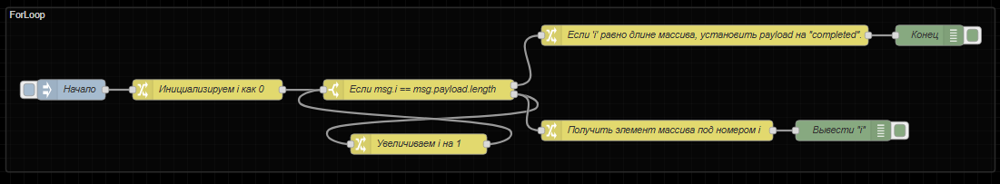

Цикл For…of / ForEach
В традиционном программировании циклы for...of и forEach обычно используются для итерации по массивам или свойствам объектов, что позволяет обрабатывать отдельные элементы. Поскольку U-Logic не включает эти конкретные конструкции, вы можете повторить их функциональность, используя комбинацию узлов, в частности, узлы split и join.
Вот как можно воспроизвести эту функциональность в U-Logic:
Перетащите узел inject на холст и установите значение
msg.payloadкак["foo", "bar", "foobar"].Перетащите узел split на холст. Сохраните настройки по умолчанию. Если вы работаете со строкой, убедитесь, что вы выбрали подходящий разделитель для разделения.
При необходимости используйте узел change или function для выполнения операций над каждым элементом.
Перетащите узел debug на холст и подключите его к выходу узла split .
При нажатии кнопки узла inject, узел split будет обрабатывать каждый элемент массива по отдельности, а узел debug отобразит каждый из них в окне отладки.
Чтобы узнать, как можно сопоставлять, сортировать, фильтровать и сокращать объем данных с помощью этого подхода, ознакомьтесь с разделом: «Как фильтровать, сопоставлять, сортировать и сокращать объем данных» в U-Logic в разделе «Начало работы с U-Logic/Программирование/Преобразование данных»

Реализация циклов с помощью function узла
Реализация циклов с узлом function проста, если вы знакомы с JavaScript, так как он позволяет вам писать пользовательский код. Однако распространенной проблемой является выяснение того, как отправлять сообщение на каждой итерации, не завершая цикл после первой итерации. В этом разделе будет показано, как при помощи узла function правильно реализовать циклы, гарантируя, что каждая итерация будет обработана и отправлена должным образом, без преждевременного прерывания цикла.
В демонстрационных целях реализуем цикл for.
Перетащите узел inject на холст и установите значение для
msg.payloadкак[1, "hello", "%", true].Перетащите узел function на холст и добавьте следующий код JavaScript:
for (let i = 0; i < msg.payload.length; i++) {
// Создать новое сообщение для каждого элемента
let newMsg = { ...msg }; // Копировать оригинальный объект msg
newMsg.payload = msg.payload[i]; // Установить payload на текущий элемент
node.send(newMsg); // Отправить сообщение
}
Перетащите узел debug на холст и подключите его к выходу узла function.
Когда вы развертываете поток и нажимаете кнопку inject, каждый элемент массива будет отправлен как отдельное сообщение и выведен на панель отладки. Это работает, поскольку node.send() метод позволяет отправлять сообщения асинхронно. В отличие от return, который немедленно завершает выполнение узла function, node.send() продолжает обрабатывать и отправлять каждое сообщение, не останавливая цикл.
Используя node.send() внутри цикла, вы гарантируете, что каждая итерация создает отдельное сообщение, а узел function может эффективно обрабатывать несколько сообщений. Для получения дополнительной информации об этом обратитесь к Документации по отправке сообщений асинхронно.

Терминология
Ниже приведены основные термины и концепции, используемые в U-Logic для обеспечения ясности и последовательности при общении между проектами.
Поток
Поток представлен в виде вкладки в рабочей области редактора, которая предоставляет новую рабочую область для создания приложений путем соединения узлов. Термин «поток» также используется для неформального описания одного набора соединенных узлов. Таким образом, поток (вкладка) может содержать несколько потоков (наборов соединенных узлов), но формально можно сказать, что поток — это родительская группа нескольких соединенных узлов.
Подпоток
Подпоток в U-Logic — это набор узлов, которые свернуты в один узел в рабочей области. Он позволяет группировать набор узлов в повторно используемую единицу. Это помогает в организации потоков, содействии повторному использованию и упрощении сложных конструкций потоков путем инкапсуляции нескольких узлов в единое представление узла более высокого уровня.
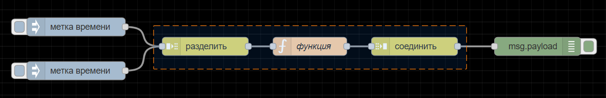
Рабочее пространство
В рабочей области создаются потоки (группы узлов) путем перетаскивания узлов из палитры и их соединения. Добавление новой вкладки потока дает вам новое рабочее пространство.
Узел
Узел — это фундаментальный строительный блок, используемый для создания потоков. Каждый узел представляет собой отдельную часть функциональности или определенное действие, которое может быть выполнено в потоке.
Провода
«Провода» относятся к соединениям, которые связывают узлы вместе, чтобы определить поток данных. Эти провода визуально представляют направление и поток информации от одного узла к другому в потоке U-Logic.
Порты входа и выхода
Узлы в U-Logic имеют порты входа и выхода, представленные маленькими кружками на левой (вход) и правой (выход) сторонах узла. Эти порты указывают, где данные входят или выходят из узла. Это позволяет вам соединять различные узлы с помощью проводов.
Сообщение
Сообщение по сути является объектом JavaScript, который переносит данные между узлами в потоке. Это сообщение содержит как основную полезную нагрузку данных, так и дополнительные метаданные, что позволяет узлам эффективно общаться и обрабатывать информацию.
Payload
Основное свойство в сообщении. Это свойство по умолчанию, с которым будет работать большинство узлов. Это свойство содержит основные данные, которые узлы в потоке обрабатывают и которыми манипулируют.
Контекст
Контекст относится к механизму хранения, который позволяет узлам хранить данные между вызовами. Он предоставляет узлам способ совместного использования данных в пределах одного экземпляра или потока, в разных потоках в U-Logic. О дополнительной информации можно узнать здесь Понимание переменных Node, Flow, Global в U-Logic.
Узел function
Узел function в U-Logic позволяет вам писать пользовательские функции JavaScript для обработки и управления сообщениями в ваших потоках.
Палитра узлов
Палитра представляет собой боковую панель, содержащую все узлы.
Редактор
Редактор в U-Logic — это графический интерфейс, в котором вы создаете и управляете потоками. Он включает в себя все компоненты: рабочее пространство, палитру для узлов, вкладки для организации потоков и боковую панель для настройки и развертывания.
Экземпляр
В U-Logic экземпляр относится к работающей среде выполнения U-Logic, которая управляет потоками и взаимодействиями узлов.
Развертывание потока
Развертывание потока в U-Logic означает активацию изменений потока в среде выполнения. Это делается нажатием кнопки «Развернуть» в редакторе, активируя узлы для обработки данных или выполнения задач, определенных в потоке.
Импорт, экспорт, группировка потоков
Потоки можно импортировать, экспортировать и группировать в U-Logic, что позволяет вам делиться своими потоками с другими или импортировать потоки, созданные другими. Потоки экспортируются в формате JSON и обычно называются flow.json. Группировка потоков позволяет вам организовывать связанные потоки вместе для лучшего управления и обмена. Эта функция облегчает совместную работу и обмен проектами U-Logic в сообществе.
Горячие клавиши U-Logic
Использование горячих клавиш в U-Logic помогает работать быстрее, облегчая навигацию, редактирование и управление потоками. Ниже приведен список горячих клавиш U-Logic:
Общие горячие клавиши
Основное сочетание |
Альтернативное сочетание |
Описание |
|---|---|---|
Ctrl + E |
⌘ + E |
Открыть диалог экспорта |
Ctrl + I |
⌘ + I |
Открыть диалог импорта |
Ctrl + Z |
⌘ + Z |
Отменить последнее действие |
Ctrl + Y |
⌘ + Y |
Повторить последнее отмененное действие |
Ctrl + D |
⌘ + D |
Развернуть поток |
Ctrl + Space |
⌘ + Space |
Открыть/Закрыть боковую панель |
Ctrl + P |
⌘ + P |
Открыть/Закрыть палитру узлов |
Ctrl + Shift + P |
⌘ + Shift + P |
Показать список действий |
Ctrl + Shift + L |
⌘ + Shift + L |
Показать журнал событий |
Alt + Shift + P |
⌥ + Shift + P |
Открыть управление палитрой |
Shift + , |
⇧ + , |
Открыть настройки горячих клавиш |
Ctrl + Alt + R |
⌘ + ⌥ + R |
Показать обзор изменений |
Ctrl + G, затем C |
⌘ + G, затем C |
Открыть панель «конфиг» в боковой панели |
Ctrl + G, затем I |
⌘ + G, затем I |
Открыть панель «инфо» в боковой панели |
Ctrl + G, затем H |
⌘ + G, затем H |
Открыть панель «справка» в боковой панели |
Ctrl + G, затем D |
⌘ + G, затем D |
Открыть панель «отладка» в боковой панели |
Ctrl + Alt + L |
⌘ + ⌥ + L |
Очистить панель отладки |
Ctrl + Enter |
⌘ + Enter |
Подтвердить редактирование |
Ctrl + Escape |
⌘ + Escape |
Отменить редактирование |
Рабочая область
Основное сочетание |
Альтернативное сочетание |
Описание |
|---|---|---|
Ctrl + «+» |
⌘ + + |
Увеличить масштаб |
Ctrl + «-» |
⌘ + - |
Уменьшить масштаб |
Ctrl + 0 |
⌘ + 0 |
Сбросить масштаб до 100% |
Ctrl + , |
⌘ + , |
Настроить вид в параметрах пользователя |
Shift + ↑ |
⇧ + ↑ |
Переместить вид вверх на 10 ячеек сетки |
Shift + ↓ |
⇧ + ↓ |
Переместить вид вниз на 10 ячеек сетки |
Shift + ← |
⇧ + ← |
Переместить вид влево на 10 ячеек сетки |
Shift + → |
⇧ + → |
Переместить вид вправо на 10 ячеек сетки |
Ctrl + ↑ |
⌘ + ↑ |
Прокрутить рабочую область вверх |
Ctrl + ↓ |
⌘ + ↓ |
Прокрутить рабочую область вниз |
Ctrl + ← |
⌘ + ← |
Прокрутить рабочую область влево |
Ctrl + → |
⌘ + → |
Прокрутить рабочую область вправо |
Вкладка потока
Основное сочетание |
Альтернативное сочетание |
Описание |
|---|---|---|
Alt + W |
⌥ + W |
Скрыть текущий поток |
Alt + Shift + W |
⌥ + ⇧ + W |
Показать/повторно открыть последний скрытый поток |
Ctrl + Shift + F |
⌘ + ⇧ + F |
Показать список потоков для переключения |
Ctrl + [ |
⌘ + [ |
Открыть предыдущую вкладку потока |
Ctrl + ] |
⌘ + ] |
Открыть следующую вкладку потока |
Ctrl + Shift + → |
⌘ + Shift + → |
Перейти к следующему положению |
Ctrl + Shift + ← |
⌘ + Shift + ← |
Перейти к предыдущему положению |
Группа
Основное сочетание |
Альтернативное сочетание |
Описание |
|---|---|---|
Ctrl + Shift + C |
⌘ + Shift + C |
Копировать стиль выбранной группы |
Ctrl + Shift + V |
⌘ + Shift + V |
Вставить/применить скопированный стиль группы |
Ctrl + Shift + G |
⌘ + Shift + G |
Добавить выбранные группы или узлы в новую группу |
Ctrl + Shift + U |
⌘ + Shift + U |
Разгруппировать группы или узлы |
Узел
Основное сочетание |
Альтернативное сочетание |
Описание |
|---|---|---|
Ctrl + Delete |
⌘ + Delete |
Удалить выбранный узел и переподключить провода |
Enter |
⏎ |
Открыть диалог свойств узла |
Ctrl + F |
⌘ + F |
Поиск узлов в потоке |
Провод
Основное сочетание |
Альтернативное сочетание |
Описание |
|---|---|---|
Alt + L, затем L |
⌥ + L, затем L |
Разделить провод узлом связи |
Выделение
Основное сочетание |
Альтернативное сочетание |
Описание |
|---|---|---|
Ctrl + C |
⌘ + C |
Копировать выделенное |
Ctrl + X |
⌘ + X |
Вырезать выделенное |
Ctrl + V |
⌘ + V |
Вставить скопированное/вырезанное |
Delete |
⌫ |
Удалить выделенное |
Ctrl + A |
⌘ + A |
Выбрать все узлы |
Escape |
⎋ |
Снять выделение |
Пользовательские горячие клавиши
U-Logic позволяет настраивать горячие клавиши под ваш рабочий процесс, облегчая использование редактора и ускоряя выполнение общих задач.
Как настроить пользовательские горячие клавиши:
Чтобы настроить пользовательские горячие клавиши, перейдите в раздел «Клавиши» в параметрах пользователя, или нажмите
Shift + ?В Настройках клавиатуры вы увидите действия с назначенными горячими клавишами, а также те, которые не назначены. Чтобы изменить или назначить горячие клавиши, нажмите на «Не назначено» или существующую горячую клавишу рядом с действием, которое вы хотите изменить.
Введите предпочитаемую комбинацию клавиш для действия. Затем выберите соответствующую область действия и нажмите значок галочки, чтобы сохранить изменения. Ваши новые горячие клавиши теперь активны.
Узлы
В U-Logic узлы предназначены для предоставления базовых строительных блоков для создания потоков.
Основные узлы включают узлы для базовой функциональности, такой как ввод/вывод, обработка и поток управления. Они являются основой, на которой могут быть построены более сложные рабочие процессы, и они необходимы для работы U-Logic.
Узлы сгруппированы в несколько разделов на боковой панели узлов:
общие - Разнообразные узлы
функция - Управление потоком, блокировка или отправка дополнительных сообщений.
сеть — Прием и отправка сообщений по сети по разным протоколам.
последоват-ть - Работа с коллекциями сообщений или их создание.
анализатор - Преобразование данных из одного формата в другой.
хранилище — Для чтения или записи файлов.
общие
inject
Узел inject является началом многих потоков, которые запускаются вручную. Кнопка слева от узла отправляет сообщение подключенным узлам. По этой причине его часто используют также для отладки, чтобы вводить значения в точке выбора. Элемент сообщения также может быть пустым. Сообщение для отправки по умолчанию использует временную метку в качестве payload и пустой topic.
Свойства сообщений можно установить для потоковой переменной, глобальных переменных и многих других типов, включая выражения JSONata
Потоки также могут быть запущены один раз сразу после того, как U-Logic запускает потоки или с задержкой. Это полезно для установки начального состояния из потока при загрузке.
Узел inject также может запускать поток на основе расписания. Расписания имеют возможности, имитирующие cron. В нижней части панели свойств в разделе повтора можно выбрать «в определенное время».
Повторение измерения на интервале выполняется выбором «с интервалом» в разделе «Повторять». В расписании требуется ввод числа больше 0 и меньше 2^31. Если значение меньше нуля U-Logic отобразит ошибку. Если значение 0, то значение раздела «Повторять» поменяется при сохранении с «с интервалом» на «нет».
Примеры
inject при запуске U-Logic
Для настройки состояния при запуске U-Logic узел inject может быть установлен на нулевую задержку для запуска потока. Когда узел inject настроен на запуск только один раз, после метки внутри узла отображается маленькая «1».
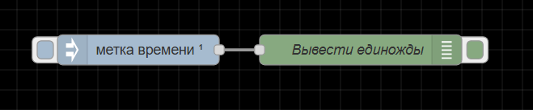
Запускайте поток ежедневно в полночь
Выбрав «в определенное время» в разделе «Повторять», узел ввода может генерировать сообщение в установленное время. Полезно для обработки данных в установленное время.
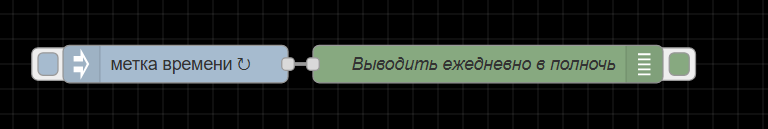
Вставьте статическую строку
Узел inject также может устанавливать payload для других входных данных, например, статической строки. Обратите внимание, что эта строка не может иметь несколько строк.

Документация по узлу
Вводит сообщение в поток вручную или с регулярными интервалами. Полезная нагрузка сообщения может быть различных типов, включая строки, объекты JavaScript или текущее время.
Выходные данные
payload - Настроенный payload сообщения.
topic - Необязательное свойство, которое можно настроить в узле.
Потробности
Узел inject может инициировать поток с определенным значением payload. payload по умолчанию — это временная метка текущего времени в миллисекундах с 1 января 1970 года.
Узел также поддерживает внедрение строк, чисел, логических значений, объектов JavaScript или значений потока/глобального контекста.
По умолчанию узел запускается вручную нажатием на его кнопку в редакторе. Его также можно настроить через регулярные интервалы или по расписанию.
Его также можно настроить на однократный запуск при каждом запуске потоков.
Максимальный интервал , который можно указать, составляет около 596 часов / 24 дня.
Примечание
Параметры «с интервалом» и «в определенное время» используют стандартную систему cron.
Примечание
Чтобы включить новую строку в строку, необходимо использовать узел function или template для создания payload.
debug
Где и почему используется узел debug?
Узел debug используется для понимания сообщений и данных, проходящих через ваши потоки. Во время разработки настоятельно рекомендуется добавлять узлы debug в ключевые точки вашего потока, чтобы у вас была видимость и понимание того, что передается.
В редакторе U-Logic отладочные сообщения можно просмотреть на правой боковой панели под значком отладки.

Параметры конфигурации
Узел debug имеет ряд параметров конфигурации:
«Выводить», т.е. то, что вы хотите, чтобы вывел узел debug:
msg.
Узел debug можно настроить на вывод любого свойства объекта msg. Возможно, вы захотите вывести значение
msg.topicилиmsg.my_propertyвместо этого.
весь msg объект сообщения
Для просмотра всего объекта
msgи всех его свойств.Объект msg часто содержит ценную информацию, которую можно использовать в ваших потоках.
выражение
Язык запросов JSONata можно использовать для преобразования свойств объекта msg для вывода более понятной человеку информации.
«В», т.е. то, куда вы хотите, чтобы узел debug вывел:
окно отладки
Если эта функция включена, вывод будет отправлен на боковую панель отладки.
статус узла (32 символа)
Если включено, вывод будет отображаться под узлом.
Для персонализации вывода статуса доступны дополнительные опции:
то, что выводит этот узел - Это покажет тот же вывод, что и вывод отладки.
msg. - В выходных данных о статусе можно отобразить что-то отличное от того, что отображается в выходных данных отладки.
выражение - Язык запросов JSONata можно использовать для преобразования свойств объекта
msgдля вывода более понятной человеку информации.message count - Здесь будет показано количество сообщений, прошедших через узел отладки.
Лучшие советы
Копировать путь
Функция «Копировать путь» — это реальная экономия времени и избавление от многих проблем при построении потоков. Она помогает избегать опечатки и другие ошибки.

Копировать значение
При разработке потоков вам может понадобиться точная копия значения свойства в объекте msg для использования в узле inject, change или function для моделирования данных. Это чрезвычайно полезно, поскольку создание демонстрационного потока, содержащего реальные данные, может помочь с решением возникающих проблем.
Закрепить видимость
Когда в элементе отладки много элементов, может быть сложно увидеть интересующие элементы. Кнопка «Закрепить видимость» поможет вам быстро находить эти элементы.

Документация по узлу
Отображает выбранные свойства сообщения на вкладке боковой панели отладки и, при необходимости, журнал времени выполнения. По умолчанию он отображает msg.payload, но может быть настроен для отображения любого свойства, полного сообщения или результата выражения JSONata.
Подробности
Боковая панель отладки обеспечивает структурированное представление отправляемых сообщений, что упрощает понимание их структуры.
Объекты и массивы JavaScript могут быть свернуты и развернуты по мере необходимости. Буферные объекты могут отображаться как необработанные данные или как строка, если это возможно.
Рядом с каждым сообщением боковая панель отладки содержит информацию о времени получения сообщения, узле, который его отправил, и типе сообщения. Нажатие на идентификатор исходного узла покажет этот узел в рабочей области.
Кнопка на узле может использоваться для включения или отключения его вывода. Рекомендуется отключить или удалить любые узлы debug, которые не используются.
Узел также можно настроить на отправку всех сообщений в окно отладки или на отправку короткого (32 символа) текста статуса узла.
complete
Что такое узел complete?
Узел complete в U-Logic используется для запуска потока после того, как указанный узел завершает свое выполнение или определенную задачу. Это достигается путем информирования среды выполнения U-Logic о завершении задачи, выполняемой самим узлом.
Примечание
Хотя этот узел поддерживается всеми узлами, использовать его могут только те узлы, которые реализовали поддержку, информируя среду выполнения о завершении определенной задачи.
Этот узел должен быть настроен для обработки событий для выбранных узлов. Он не предоставляет возможность автоматически включить обработку событий со всех узлов.
Для уведомления о завершении задачи в середине функции можно использовать node.call в узле функции.
Варианты использования
Асинхронное завершение задачи:
Предположим, у вас есть поток, где один узел выполняет асинхронную задачу, например, извлечение данных из API. Вы можете использовать узел complete для запуска следующего набора действий в потоке только после того, как данные были успешно извлечены.
Завершение длительного процесса:
Для процессов, выполнение которых занимает значительное время, таких как пакетные задания, преобразования данных или задачи машинного обучения, узел сomplete можно использовать для обозначения окончания этих процессов и запуска последующих действий или уведомлений.
Пакетная обработка:
Для задач пакетной обработки узел complete может использоваться для сигнализации о завершении пакетного процесса. Это может быть полезно в рабочих процессах обработки данных, где данные обрабатываются пакетами, и вам нужно знать, когда каждый пакет завершен, прежде чем начинать следующий.
Пример
В примере потока ниже у нас есть узел inject, отправляющий get запрос http request на фиктивный API. После успешного завершения запроса полный узел обработает событие.
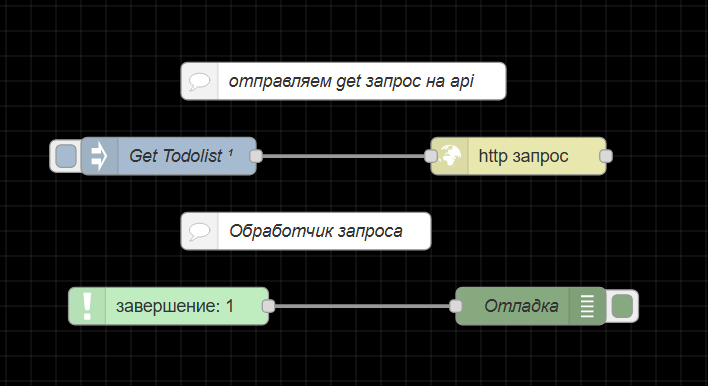
Выходное значение
Когда задача завершается указанным узлом в узле complete, он отправляет тот же объект сообщения, что и этот указанный узел.
Документация по узлу
Запускает поток, когда другой узел завершает работу
Подробности
Если узел сообщает среде выполнения о завершении обработки сообщения, этот узел можно использовать для запуска второго потока.
Этот узел должен быть настроен для обработки события для выбранных узлов в потоке. В отличие от узла catch, он не обеспечивает режим «всех узлов», который автоматически применяется ко всем узлам в потоке.
catch
Узел catch в U-Logic имеет решающее значение для обработки ошибок в ваших потоках. Всякий раз, когда в потоке возникает ошибка, этот узел ее перехватывает. Как только узел catch перехватывает исключение, он может передать соответствующую информацию в объекте msg другому узлу.
Это помогает вам управлять ошибками, которые могут возникнуть во время выполнения потока, и реагировать на них, а также предотвращать сбои, что обеспечивает бесперебойную работу и эффективное управление ошибками.
Настройка узла catch
Узел catch можно настроить с помощью свойства «Ловить оишбки» со следующими параметрами:
всех узлов: фиксирует ошибки со всех узлов в одной вкладке или потоке.
in same group: ограничивает захват ошибок узлами в той же группе, частью которой он является.
выбранных узлов: фиксирует ошибки из определенных узлов, выбранных вами.
Варианты использования и примеры
Обработка ошибок для внешних интеграций: узел catch обрабатывает ошибки при взаимодействии с API, включая сетевые проблемы, ошибки ответа, недоступность сервера, потери соединения с базой данных, ошибки тайм-аута
В примере потока ниже узел inject устанавливает тайм-аут запроса в 2000 миллисекунд. В узле http request был передан фиктивный URL с параметром задержки, установленным на 3 секунды, имитируя отложенный ответ. Эта имитированная задержка вызовет ошибку тайм-аута запроса, которая затем будет перехвачена узлом catch. После перехвата ошибки поток повторит запрос с задержкой в 5 секунд.
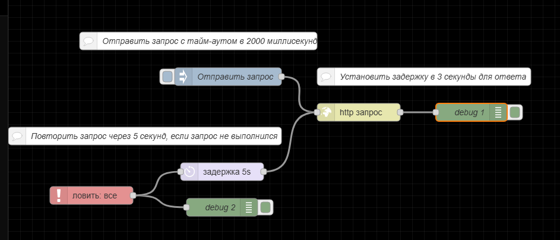
Проверка пользовательского ввода: в приложениях с пользовательским вводом ошибки проверки могут нарушить поток. Узел сatch обрабатывает эти ошибки, предоставляя обратную связь или корректирующие действия.
В примере потока ниже узел function сортирует входные данные, полученные от узла inject, используя метод sort, который доступен только для массивов. Отправка других типов данных вызовет ошибку, которая будет перехвачена узлом catch, который затем отправит сообщение проверки.
Объект сообщения, отправленный узлом Catch
Узел catch при возникновении ошибки выдает объект сообщения, содержащий следующие свойства:
payload: payload, которая передается узлу, выдавшему ошибку.
сообщение: сообщение об ошибке
источник - объект, содержащий информацию об узле, регистрирующем ошибку:
id - идентификатор исходного узла
тип - тип исходного узла
имя - имя, если установлено, исходного узла
количество: сколько раз это сообщение было отправлено этим узлом.
Документация по узлу
Перехват ошибок, возникающих в узлах на одной вкладке.
Выходные данные
error.message- сообщение об ошибке.error.source.id- идентификатор узла, выдавшего ошибку.error.source.type- тип узла, вызвавшего ошибку.error.source.name- имя узла, выдавшего ошибку, если оно установлено.
Подробности
Если узел выдает ошибку при обработке сообщения, поток обычно останавливается. Этот узел может использоваться для перехвата этих ошибок и их обработки с помощью выделенного потока.
По умолчанию узел будет перехватывать ошибки, выданные любым узлом на той же вкладке. В качестве альтернативы он может быть нацелен на определенные узлы или настроен на перехват только тех ошибок, которые еще не были перехвачены нацеленным узлом catch.
При возникновении ошибки все соответствующие узлы catch получат сообщение.
Если ошибка выдается внутри подпотока, ошибка будет обработана любыми узлами catch внутри подпотока. Если ни один из них не существует, ошибка будет распространена на вкладку, на которой находится экземпляр подпотока.
Если сообщение уже имеет error свойство, оно копируется в _error.
status
Для чего используется узел status в U-Logic?
Узел status позволяет вам отслеживать состояние отдельных узлов или всех узлов, работающих в вашем потоке. Узел status не создает payload, но он сообщает о работе узла. Это позволит вам программно реагировать на состояния ошибок или ограничения вариантов использования в потоке.
Например, узел delay, который ставит в очередь внешние сообщения, может захотеть сообщить об ошибке после того, как очередь превысит определенное число. Узел status может использоваться для отслеживания количества сообщений в очереди.
Вывод узла status осуществляется в двух форматах:
Текстовый вывод добавляется в реальном времени под узлом. Цвет вывода также будет меняться в зависимости от статуса.
Объект с именем status доступен из отладчика и других узлов, таких как узел change. Свойства объекта статуса перечислены ниже
Пример узлов status

Документация по узлу
Сообщения о состоянии других узлов можно просматривать на той же вкладке.
Выходные данные
status.text- текст статуса.status.source.type- тип узла, сообщившего о состоянии.status.source.id- идентификатор узла, сообщившего о статусе.status.source.name- имя узла, сообщившего о состоянии, если оно установлено.
Подробности
Этот узел не имеет payload.
По умолчанию узел сообщает о состоянии всех узлов на той же вкладке рабочей области. Его можно настроить на выборочное сообщение о состоянии отдельных узлов.
link
Для чего используется узел link в U-Logic?
Узлы link out и link in используются для того, чтобы помочь разработчикам U-Logic организовать свои потоки, чтобы сделать их более понятными. Узлы link можно использовать для соединения двух наборов узлов, но соединение отображается только при выборе одного из узлов. Это позволяет разработчикам группировать узлы, которые выполняют определенную функцию. Узлы link out и link in могут соединять две группы, но визуально это не будет заметно, пока не будет выбран один из узлов.
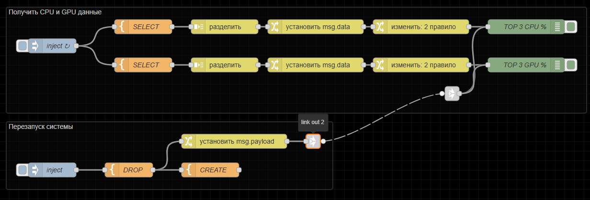
Документация по узлу
Создавайте виртуальные провода между потоками.
Подробности
Узел link out может быть подключен к любому link in узлу на любой вкладке. После подключения они ведут себя так, как если бы они были соединены вместе обычным проводом.
Узел link in может быть подключен к любому link out узлу на любой вкладке. После подключения они ведут себя так, как если бы они были соединены вместе обычным проводом.
Провода между узлами link out и link in отображаются только при нажатии на них. Если есть какие-либо провода к другим вкладкам, отображается виртуальный узел, на который можно нажать, чтобы перейти на соответствующую вкладку.
Когда узел link out получает сообщение, оно передается подключенному link in узлу.
Если есть два или более link in узлов с одинаковым именем, возникнет ошибка.
Примечание
Узлы link out и link in не могут вести внутрь подпотока или изнутри подпотока наружу.
Входное значение
target- В узле link call, если для параметра «Link Type» установлено значение «Dynamic target (msg.target)», укажитеmsg.targetимя узла, который link in вы хотите вызвать.
comment
Документация по узлу
Узел, который можно использовать для добавления комментариев к потокам.
Подробности
Панель «Изменить узел comment» принимает синтаксис Markdown. Написанный текст будет отображаться в боковой панели информации.
функция
function
Что такое узел function в U-Logic?
В U-Logic узел function позволяет писать пользовательский код на JavaScript для обработки объектов сообщений в потоке. Он используется для выполнения специфических задач, которые нельзя реализовать с помощью стандартных встроенных узлов. Когда вы пишете код на JavaScript в узле function, он выполняется каждый раз при прохождении сообщения через узел.
В U-Logic функция должна либо возвращать объект (объект сообщения), либо ничего не возвращать. Если вернуть данные другого типа вместо объекта, это приведёт к ошибке. По умолчанию узел function передаёт объект сообщения без изменений, передавая данные дальше в поток.
Идеально, если объект сообщения возвращается внутри узла function в конце кода. Если разместить return в середине кода, это может привести к неполному выполнению оставшейся части кода.
Если узел function должен выполнить асинхронное действие перед отправкой сообщения, он не может использовать return для возврата сообщения в конце функции. Вместо этого в таких случаях необходимо использовать node.send(), как показано ниже:
// Симуляция асинхронной операции с использованием setTimeout
setTimeout(() => {
// Через 2 секунды создаётся объект сообщения с некоторыми данными
const message = { payload: "Async operation complete" };
// Отправка сообщения в последующие узлы
node.send(message);
}, 2000);
Кроме того, если вам нужно передать объект сообщения внутри узла function в середине скрипта в последующие узлы, вы можете использовать node.send() для этой цели, продолжая выполнение оставшейся части кода, как показано ниже:
// Извлечение данных из входящего сообщения
const inputData = msg.payload;
// Выполнение некоторой обработки
const processedData = inputData * 2;
// Отправка объекта сообщения с обработанными данными
node.send({ payload: `Processed data: ${processedData}` });
// Продолжение выполнения оставшегося кода...
// Пример дальнейшей обработки...
if (processedData > 100) {
node.warn("Обнаружено высокое значение обработанных данных!");
} else {
node.log("Значение обработанных данных в пределах нормы.");
}
// Возвращение изменённого объекта сообщения
return msg;
Если вы не хотите, чтобы функция передавала что-либо в следующий узел, вы можете в узле function вернуть null.
По умолчанию узел function имеет один выход, но его можно настроить на несколько выходов во «Setup», изменив свойство «Выходы». Затем можно отправлять сообщения в каждый из выходов, используя массив, располагая их в порядке, соответствующем нужным выходам.
// Создание нескольких сообщений с разными типами данных
var msg1 = { payload: 1 };
var msg2 = { payload: [3,45,2,2,4] };
var msg3 = { payload: {"name":"bob"} };
var msg4 = { payload: "Это строка" };
// Возвращение массива сообщений
return [msg1, msg2, msg3, msg4];
Различные вкладки в узле Function
В узле function есть четыре разных типа вкладок, каждая из которых имеет своё предназначение:
Setup
Выходы: Позволяет настроить количество выходов, которые будет иметь узел function.
Время ожидания: Позволяет определить, сколько времени узел function может выполняться до возникновения ошибки. По умолчанию, если установлено 0, тайм-аут не применяется.
modules: Позволяет добавлять или импортировать дополнительные модули в узел function. Эти модули будут автоматически устанавливаться при развёртывании потока. Однако в настройках (
-settings) необходимо включить параметр'functionExternalModules', установив его в'true'.
Настройка
В этой вкладке можно написать код, который будет выполняться при старте узла. Это полезно для инициализации состояния, необходимого для работы узла function.
Функция
Это основная вкладка, в которой пишется JavaScript-код, выполняющийся при получении сообщения от других узлов.
Закрытие
Эта вкладка позволяет добавить код для очистки ресурсов перед остановкой узла, например, закрытия соединений или завершения фоновых задач перед повторным развёртыванием потока.
Логирование событий
Когда узлу function в U-Logic нужно записать что-либо в лог, он может использовать следующие методы:
node.log(): используется для общего логирования.node.warn(): используется для записи предупреждений.node.error(): используется для записи ошибок.
Сообщения, записанные через node.warn() и node.error(), будут отображаться во вкладке «отладка».
Также можно использовать узел catch для обработки ошибок. Чтобы передать msg в узел catch, укажите его вторым аргументом в node.error:
node.error("Error", msg);
Объекты U-Logic, доступные в узле function
В узле function в U-Logic можно обращаться к следующим объектам:
node: объект, содержащий свойства и методы для настройки и взаимодействия с узлом в потоке.
context: локальный контекст узла.
flow: контекст уровня потока.
global: контекст уровня глобального окружения.
RED: объект, предоставляющий доступ к API среды выполнения U-Logic.
Применение и примеры
Пользовательская логика: Иногда в вашем потоке может понадобиться специфическая логика, которую невозможно реализовать с помощью стандартных узлов. В таких случаях используется узел function.
В примере ниже функция конвертирует температуру (сгенерированную узлом inject в виде случайного числа) из Цельсия в Фаренгейт, а также выполняет дополнительное форматирование.
Условная маршрутизация: Когда приходится обрабатывать широкий спектр условий с сложной логикой для каждого случая, switch-узел может оказаться недостаточно гибким. В таких ситуациях полезно использовать function-узел с несколькими выходами.
В примере ниже inject-узел генерирует случайное число и отправляет его в function-узел. Внутри function-узла выполняется оценка полученного числа, после чего оно направляется на разные выходы в зависимости от заданных диапазонов значений.
Документация по узлу
Функция JavaScript, запускаемая для сообщений, получаемых узлом.
Сообщения передаются в виде JavaScript-объекта msg.
По соглашению, объект msg содержит свойство msg.payload, содержащее тело сообщения.
Функция должна возвращать объект сообщения (или несколько объектов сообщений), но также может ничего не возвращать, чтобы остановить поток.
Вкладка «Настройка» содержит код, который выполняется при запуске узла. Вкладка «Закрытие» содержит код, который выполняется при остановке узла.
Если код в «Настройке» возвращает объект Promise, узел не начнёт обработку сообщений до тех пор, пока этот Promise не будет выполнен.
Отправка сообщений
Функция может либо вернуть сообщения, которые она хочет передать следующим узлам в потоке, либо вызвать node.send(messages).
Она может вернуть/отправить:
Одиночный объект сообщения – передаётся узлам, подключённым к первому выходу.
Массив объектов сообщений – передаётся узлам, подключённым к соответствующим выходам.
Примечание
Код настройки выполняется во время инициализации узла. Поэтому, если в вкладке Setup вызывается node.send, последующие узлы могут не получить сообщение.
Если какой-либо элемент массива сам является массивом сообщений, тогда несколько сообщений отправляются на соответствующий выход.
Если возвращается null (либо как одиночное значение, либо как элемент массива), сообщение не передаётся дальше.
Доступ к информации о узле
Следующие свойства позволяют получить информацию о текущем узле:
node.id- идентификатор узлаnode.name- имя узлаnode.outputCount- количество выходов узла
switch
Для чего используется узел switch в U-Logic?
Узел switch позволяет вам маршрутизировать сообщения на основе определенных условий. Он действует как инструмент принятия решений в вашем потоке, позволяя вам определять правила для направления сообщений в различные выходные ветви.
Вот несколько распространенных вариантов использования узла switch в U-Logic:
Фильтрация сообщений: Вы можете использовать узел switch для фильтрации сообщений на основе определенных критериев. Например, вы можете захотеть отфильтровать сообщения, которые не соответствуют определенному порогу или не содержат определенных ключевых слов.
Условная маршрутизация: Узел switch позволяет вам направлять сообщения по разным путям в вашем потоке на основе условий. Вы можете настроить правила, которые определяют, в какую выходную ветвь должно быть отправлено сообщение, в зависимости от его содержимого или свойств.
Обработка событий: Если вы работаете с событиями или потоками данных, узел switch может помочь вам обрабатывать различные типы событий по-разному. Например, у вас могут быть события, связанные с показаниями температуры и влажности, и вы хотите обрабатывать их отдельно.
Преобразование значений: В случаях, когда необходимо преобразовать значения из одного формата в другой, узел switch может направлять сообщения разным преобразователям на основе свойств входящего значения.
Обработка ошибок: При работе с данными или API вы можете получать сообщения об ошибках, которые необходимо обрабатывать иначе, чем обычные данные. Узел switch может направлять сообщения об ошибках в отдельную ветвь для соответствующей обработки.
Обработка на основе языка или региона: в приложениях, включающих локализацию или многоязыковую поддержку, узел коммутации может маршрутизировать сообщения на основе информации о языке или регионе в сообщении.
Примеры

Документация по узлу
Маршрутизируйте сообщения на основе значений их свойств или положения в последовательности.
Подробности
При поступлении сообщения узел оценивает каждое из определенных правил и пересылает сообщение на соответствующие выходы любых соответствующих правил.
При желании узел можно настроить так, чтобы он прекращал оценку правил, как только найдет подходящее.
Правила можно оценивать по отдельному свойству сообщения, свойству потока, глобального контекста или результату выражения JSONata.
Правила
Существует четыре типа правил:
Правила значений (value rules) оцениваются по настроенному свойству.
Правила последовательности (sequence rules) могут использоваться в последовательностях сообщений, например, генерируемых узлом split.
Можно указать выражение JSONata, которое будет оцениваться по всему сообщению и будет соответствовать ему, если выражение возвращает истинное значение.
Правило «иначе» можно использовать для сопоставления, если ни одно из предыдущих правил не совпало.
Примечания
Правила «равно true», «равно false», «равно null» выполняют строгие сравнения с этими типами. Они не преобразуют типы между собой.
Правила «пустое» и «не пустое» можно использовать для проверки длины строк, массивов и буферов или количества свойств объекта. Ни одно из правил не будет выполнено, если проверяемое свойство имеет значение boolean, null или undefined.
Обработка последовательностей сообщений
По умолчанию узел не изменяет свойства сообщений msg.parts, являющихся частью последовательности.
Параметр «воссоздать последовательность сообщений» может быть включен для генерации новых последовательностей сообщений для каждого совпадающего правила. В этом режиме узел будет буферизировать всю входящую последовательность перед отправкой новых последовательностей.
change
Для чего используется узел change в U-Logic?
Узел change в U-Logic используется для изменения содержимого сообщений в потоке. Он позволяет добавлять, удалять, изменять или задавать свойства сообщений и значения payload, что делает его фундаментальным узлом для преобразования и манипулирования данными. Узел change необходим для подготовки данных к дальнейшей обработке, форматирования сообщений для определенных выходов и адаптации данных в соответствии с требованиями дальнейших узлов в потоке.
Примеры
Варианты использования узла change включают в себя:
Преобразование данных: Узел change можно использовать для преобразования данных из одного формата в другой. Например, можно преобразовать значения температуры из градусов Цельсия в градусы Фаренгейта, перевести текстовую информацию или преобразовать временные метки в другой формат.
Фильтрация сообщений: Узел change может фильтровать сообщения на основе определенных условий. Вы можете использовать узел change для маршрутизации сообщений на различные выходы, отбрасывания нерелевантных сообщений или выполнения определенных действий на основе свойств сообщения.
Дополнение сообщений: Узел change позволяет добавлять или изменять свойства в сообщении для расширения его содержимого. Например, можно добавлять временные метки, добавлять контекстную информацию или устанавливать специфические идентификаторы для целей отслеживания.
Переименование свойств: узел change позволяет переименовывать свойства сообщения, что упрощает понимание и работу с данными на различных этапах потока.
Значения по умолчанию: если в сообщении отсутствуют определенные свойства, узел change может установить значения по умолчанию для этих свойств, обеспечивая согласованность потока данных.
Форматирование сообщения: при отправке данных во внешние системы или службы узел change может форматировать payload сообщения в требуемом формате (например, JSON, XML) или корректировать данные в соответствии с конкретными требованиями API.
В целом, узел change является важнейшим инструментом для манипулирования данными в потоках U-Logic. Его гибкость и диапазон операций делают его важным узлом для настройки сообщений в соответствии с вашими конкретными вариантами использования и требованиями узлов в вашем потоке.
Документация по узлу
Устанавливать, изменять, удалять или перемещать свойства сообщения, контекста потока или глобального контекста.
Узел может указать несколько правил, которые будут применяться в том порядке, в котором они определены.
Подробности
Доступные операции:
Установить: Задать свойство. Значение может быть различных типов или может быть взято из существующего сообщения или свойства контекста.
Изменить: Поиск и замена частей свойства.
Удалить: Удалить свойство.
Переместить: Переместить или переименовать свойство объекта
Тип «выражение» использует язык запросов и выражений JSONata.
range
Для чего используется узел range в U-Logic?
Узел range в U-Logic позволяет вам сопоставлять числовое значение из одного диапазона в другой. Например, если вы хотите сопоставить мили с километрами, вы можете указать входной диапазон от 1 до 100 и целевой диапазон от 1 до 160.
Помимо преобразования единиц измерения, узел диапазона можно использовать для:
Масштабирование данных: Используйте узел range для масштабирования или нормализации данных. Например, если у вас есть показания датчика в диапазоне от 0 до 1023, но вы хотите преобразовать их в процентную шкалу 0-100, вы можете использовать узел range для этого преобразования.
Сжатие данных: Сокращение диапазона значений данных с сохранением взаимосвязей между значениями. Это может быть полезно для отображения данных в меньшем масштабе без потери важных изменений.
Аналого-цифровое преобразование: При взаимодействии с аналоговыми датчиками можно преобразовать аналоговый диапазон напряжения в диапазон цифровых значений для обработки.
Сглаживание данных: Сглаживание колебаний данных путем приведения значений в пределах диапазона к одному значению.
Примеры для узла range
Пример узла изменения, который преобразует мили в километры.
Документация по узлу
Сопоставляет числовое значение с другим диапазоном.
Входные данные
payload: payload должен быть числом. Все остальное будет пытаться быть преобразовано в число и отклонено, если это не удастся.
Выходные данные
payload: Значение сопоставлено с новым диапазоном.
Подробности
Этот узел будет линейно масштабировать полученное значение. По умолчанию «Действие» выбрано «Масштабировать msg-свойство», т.е. результат не ограничен диапазоном, определенным в узле.
Действие «Масштабировать и ограничить целевым диапазоном» означает, что результат никогда не выйдет за пределы указанного в целевом диапазоне диапазона.
Действие «Масштабировать и обернуть в целевой диапазон» означает, что результат будет перемещен в пределы целевого диапазона.
Действие «Scale, but drop msg if outside input range» означает, что результат будет масштабирован, но любые входные данные за пределами входного и выходного диапазона будут отброшены.
Например, входные данные 0–10 будут отображаться в диапазоне 0–100 в зависимости от «Действия» следующим образом:
Действие |
Вход |
Выход |
|---|---|---|
Масштабировать msg-свойство |
12 |
120 |
Масштабировать и ограничить целевым диапазоном |
121 |
00 |
Масштабировать и обернуть в целевой диапазон |
12 |
20 |
Scale, but drop msg if outside input range |
12 |
Нет выходных данных |
template
Узел template используется для создания и управления текстовыми шаблонами. Например, для генерации HTML, файлов конфигурации и т.д.; Узел template позволяет генерировать динамический контент путем внедрения данных в предопределенные шаблоны с использованием языка шаблонов Mustache. Когда нет необходимости в динамических шаблонах, поле «Формат» можно установить как «Простой текст», что дает небольшое преимущество в производительности.
Как работает узел template
Входные данные
Вы можете подключить узел template к источнику данных, например, к входу HTTP или любому другому узлу, который предоставляет данные. Эти входные данные будут использоваться для заполнения шаблона.
Определение шаблона
В конфигурации узла template вы определяете шаблон, используя текстовые языки форматирования, такие как HTML с синтаксисом mustache. mustache — это простой язык шаблонизации, который позволяет вам вставлять переменные и выражения в ваш шаблон.
Например, вы можете определить шаблон следующим образом: <p>Hello {{payload.name}}!</p>.
В этом примере будет выведено <p>Hello user!</p>.
Выходные данные
Когда узел template получает входные данные, он обрабатывает их и заменяет соответствующими значениями из входных данных. Полученный HTML или текст затем отправляется в качестве вывода на следующий узел в потоке.
Создание JSON
Узел template можно настроить на анализ результата ввода и шаблона как JSON, чтобы в дальнейшем использовать сообщение как объект, а не как строку.
Входные данные
{
payload: ['ACME', 1]
}
Конфигурация узла template
Шаблон:
{
"product": "{{payload.0}}",
"version": {{payload.1}}
}
Формат:
Mustache шаблонВывести как:
JSON
Выходные значения
{ "product": "ACME", "version": 1 }
Генерация объекта JavaScript из YAML
U-Logic также может анализировать YAML
Входные данные
{
topic: 'U-Logic',
payload: 3000
}
Конфигурация узла template
Шаблон:
options:
title: {{topic}}
port: {{payload}}
Формат:
Mustache шаблонВывести как:
JSON
Выходные значения
{ "title": "U-Logic", "port": 3000 }
Комментарии
Когда шаблон становится больше, может быть полезно добавлять комментарии к шаблону, которые не будут отображаться в выводе. Комментарии работают примерно так же, как и обычный синтаксис, с ! после открывающихся фигурных скобок:
{{! это не отобразится }}
This text will be in the output
Результатом будет This text will be in the output. Обратите внимание, что символ пустой строки (\n) отсутствует.
Документация по узлу
Устанавливает свойство на основе предоставленного шаблона.
Входные данные
msg: Объект msg, содержащий информацию для заполнения шаблона.template: Шаблонная строка, которая будет заполнена из msg.payload. Если она не настроена в панели редактирования, её можно установить как свойство msg.
Выходные данные
msg: msg со свойством, заданным путем заполнения настроенного шаблона свойствами из входящего сообщения.
Подробности
По умолчанию используется формат «Mustache шаблон».
Например, когда шаблон:
Hello {{payload.name}}. Today {{date}}
получает сообщение, содержащее:
{
date: "monday",
payload: {
name: "Ivan"
}
}
Результирующее свойство будет следующим:
Hello, Ivan. Today monday
Можно использовать свойство из контекста потока или глобального контекста. Просто используйте {{flow.name}} или {{global.name}}
Примечание
По умолчанию mustache будет экранировать любые небуквенно-цифровые или HTML-сущности в значениях, которые он заменяет. Чтобы предотвратить это, используйте {{{triple}}}.
Если вам нужно использовать {{ }} в вашем контенте, вы можете изменить символы, используемые для обозначения шаблонных разделов. Например, чтобы использовать [[ ]] вместо этого, добавьте следующую строку в верхнюю часть шаблона:
{{=[[ ]]=}}
delay
Для чего используется узел delay в U-Logic?
Узел delay позволяет вам ввести задержку в поток сообщений между узлами. Он может быть полезен в различных сценариях, где вам нужно контролировать время обработки сообщений. Например, узел delay может ограничивать скорость, с которой сообщения обрабатываются дальше или задерживать их отправку. Это может быть полезно для взаимодействия с внешними системами, которые могут иметь ограничения.
Вот еще несколько вариантов использования узла delay:
Пакетная обработка: если вы имеете дело с потоком входящих данных, которые вы хотите обрабатывать пакетами, вы можете использовать узел delay, чтобы ввести задержку между группами сообщений. Это может быть полезно, когда вам нужно агрегировать или анализировать данные по частям.
Последовательная обработка: Иногда вам нужно гарантировать, что сообщения обрабатываются в определенном порядке. Узел delay может использоваться для обеспечения последовательности обработки сообщений, особенно при работе с асинхронными системами, которые могут не гарантировать порядок.
Моделирование и тестирование: В сценариях тестирования и моделирования вы можете захотеть имитировать реальные условия синхронизации. Узел delay может помочь вам ввести задержки, которые имитируют реальные условия, позволяя вам проверить, как ваша система ведет себя с течением времени.
Триггеры на основе времени: вы можете использовать узел delay для запуска действий в определенные временные интервалы. Например, вы можете отправлять обновление статуса каждый час или выполнять задачу очистки в конце дня.
Автоматический выключатель: узел delay может использоваться как простая форма автоматического выключателя. Если расположенная дальше система выходит из строя или испытывает проблемы, вы можете ввести задержку перед повторной попыткой, давая системе некоторое время для восстановления.
Примеры для узла delay
Пример использования узла Delay для ограничения скорости http-запросов к внешнему API.
Сброс очереди для узла задержки
Узел delay может создать очередь, которая продолжит свой путь к подключенным выходным узлам. Однако есть ситуации, когда очередь необходимо очистить. Это делается путем сброса очереди. Когда свойство msg.reset установлено, очередь будет пустой.
Это полезно, когда отсутствие события может потребовать отправки уведомления. Запланируйте отправку уведомления, но разрешите положительному событию отменить уведомление. Ниже представлен такой пример: Вы хотите выключить свет, если в течение определенного периода времени не было обнаружено никакого движения, вы устанавливаете узел задержки на это время. Если обнаруживается движение, то узлу delay отправляется msg.reset, чтобы отменить включение света. Это зависит от узла inject, настроенного на отправку сообщения с интервалом для выключения света.
Документация по узлу
Задерживает каждое сообщение, проходящее через узел, или ограничивает скорость, с которой они могут передаваться.
Входные значения
delay: Устанавливает задержку в миллисекундах, применяемую к сообщению. Эта опция применяется только в том случае, если узел настроен на разрешение сообщению переопределять настроенный интервал задержки по умолчанию.rate: Устанавливает значение скорости в миллисекундах между сообщениями. Этот узел перезаписывает существующее значение скорости, определенное в конфигурации узла, когда он получает сообщение, содержащееmsg.rateзначение в миллисекундах. Этот параметр применяется только в том случае, если узел настроен на разрешение сообщению переопределять настроенный интервал скорости по умолчанию.reset: Если полученное сообщение имеет какое-либо значение этого свойства, все необработанные сообщения, удерживаемые узлом, очищаются без отправки.flush: Если полученное сообщение имеет это свойство, установленное на числовое значение, то это количество сообщений будет немедленно отправлено. Если установлен любой другой тип (например, логический), то все ожидающие сообщения, удерживаемые узлом, будут отправлены немедленно.toFront: В режиме ограничения скорости, если полученное сообщение имеет это свойство, установленное на booleantrue, то сообщение помещается в начало очереди и будет выпущено следующим. Это можно использовать в сочетании сmsg.flush=1для немедленной повторной отправки.
Подробности
При настройке задержки сообщений интервал задержки может быть фиксированным значением, случайным значением в диапазоне или динамически устанавливаться для каждого сообщения. Каждое сообщение задерживается независимо от любого другого сообщения, в зависимости от времени его прибытия.
При настройке на ограничение скорости сообщений их доставка распределяется по настроенному периоду времени. Статус показывает количество сообщений в очереди в данный момент. Он может опционально отбрасывать промежуточные сообщения по мере их поступления.
Если разрешено переопределение ставки, новая ставка будет применена немедленно и останется в силе до тех пор, пока не будет изменена снова, не будет выполнен сброс узла или не будет перезапущен поток.
Ограничение скорости может быть применено ко всем сообщениям или сгруппировано по их msg.topicзначению. При группировке промежуточные сообщения автоматически отбрасываются. В каждом временном интервале узел может либо выпустить самое последнее сообщение для всех тем, либо выпустить самое последнее сообщение для следующей темы.
trigger
Что такое узел trigger в U-Logic?
Узел trigger в U-Logic облегчает инициирование и повторение сообщений с настраиваемыми интервалами, предлагая точный контроль над временем отправки сообщений, частотой их повторения и дополнительными задержками. Эта функциональность ценна для автоматизации задач и эффективного управления потоком сообщений в потоках U-Logic.
Разница узлов trigger и inject
Узел inject позволяет отправлять сообщения с определенными интервалами, но он запускается немедленно и продолжается бесконечно, если вручную не настроена остановка. С узлом trigger вы можете контролировать, когда узел начинает и прекращает отправлять сообщения. Тем не менее, оба узла обладают различными вариантами использования и ограничениями.
Настройка узла trigger
Отправить: Сообщение для передачи последующим узлам.
затем:
ждать: Позволяет отправлять сообщение при срабатывании и затем опционально второе сообщение. Вы также можете настроить его так, чтобы он не отправлял ничего при срабатывании или для второго сообщения.
продлить при поступлении нового сообщения: включение этой опции увеличит время задержки при получении нового сообщения.
затем отправить: Позволяет настроить отправку второго сообщения с определенной задержкой или вообще не отправлять сообщение.
отправить второе сообщение на отдельный выход: включение этой опции добавит второй выход для получения второго сообщения от узла trigger.
переотправлять его каждые: позволяет повторно отправлять сообщение через определенные промежутки времени.
ждать сброс: выбор этого параметра отправит сообщение один раз при срабатывании и будет ждать, пока оно не будет сброшено. Если сброс не произойдёт, узел не будет отправлять сообщения с тем же свойством, указанным в настройке. Если выбраны все сообщения, узел не будет отправлять никаких сообщений до тех пор, пока не будет сброшен.»
Сбрасывать триггер, если: Позволяет установить
msg.payload, который при получении сбросит узел trigger. В качестве альтернативы отправка сообщения, содержащего свойство reset, сбросит узел (что является поведением по умолчанию).заменить задержку через
msg.delay: Включение этой опции позволит отправлять время задержки динамически с помощью msg.delay. Значение должно быть указано в миллисекундах.Обрабатывать: Позволяет настроить узел для обработки сообщений как отдельных потоков, используя свойство
msgдля идентификации. Выбор «Все сообщения» будет обрабатывать все типы сообщений по отдельности.
Варианты использования узла триггера:
Повторяющиеся задачи: если у вас есть задачи, которые необходимо повторять через регулярные промежутки времени, например, опрос данных или проверка состояния устройства при срабатывании, узел trigger может справиться с этим, настроив его на повторную отправку сообщений через указанные интервалы времени.
Обработка тайм-аутов: вы можете использовать узел trigger для управления тайм-аутами в вашем потоке. Например, вы можете запустить действие, если ответ не получен в течение определенного периода времени, или настроить механизм тайм-аута для взаимодействия с пользователем.
Сохранение ресурсов: узел trigger может экономить энергию или системные ресурсы, автоматически инициируя действия, такие как выключение света или закрытие клапанов, после предопределенного периода бездействия или завершения задачи.
Примеры
В примере ниже мы смоделировали систему дверного замка. Мы используем узел ввода для ввода пароля, который затем проверяется по указанному паролю в узле коммутатора. Если введенный пароль правильный, узел триггера отправляет полезную нагрузку для открытия двери. Через 4 секунды отправляется второе сообщение для закрытия двери. Это также можно использовать для сценариев, включающих включение и выключение светодиода.
В примере потока ниже у нас есть узел триггера, который непрерывно опрашивает данные из API. Он опрашивает данные с определенным интервалом при получении сообщения и останавливается, если получено сообщение со свойством „сброс“. Это также можно использовать в сценариях, где вы хотите считывать данные датчика с помощью пользовательского элемента управления.
Документация по узлу
При срабатывании может отправить сообщение, а затем опционально второе сообщение, если не будет продлено или сброшено.
Входные значения
delay: Устанавливает задержку в миллисекундах, применяемую к сообщению. Эта опция применяется только в том случае, если узел настроен на разрешение сообщению переопределять настроенный интервал задержки по умолчанию.reset: Если получено сообщение с этим свойством, любой текущий тайм-аут или повтор будут очищены, и сообщение не будет отправлено.
Подробности
Этот узел можно использовать для создания тайм-аута в потоке. По умолчанию, когда он получает сообщение, он отправляет сообщение с payload равным 1. Затем он ждет 250 мс, прежде чем отправить второе сообщение с payload равным 0.
payload каждого отправленного сообщения могут быть настроены на различные значения, включая опцию не отправлять ничего. Например, установив начальное сообщение на «ничего» и выбрав опцию продления таймера с каждым полученным сообщением, узел будет действовать как сторожевой таймер; отправляя сообщение только в том случае, если в течение установленного интервала ничего не получено.
Если задан строковый тип, узел поддерживает синтаксис шаблона mustache.
Задержку между отправкой сообщений можно переопределить при помощи msg.delay если эта опция включена в узле. Значение должно быть указано в миллисекундах.
Если узел получает сообщение со свойством reset, или payload которое соответствует настроенному в узле, любой текущий тайм-аут или повтор будет очищен, и сообщение не будет отправлено.
Узел можно настроить на повторную отправку сообщения через регулярные интервалы времени до тех пор, пока он не будет сброшен полученным сообщением.
При желании узел можно настроить на обработку сообщений так, как будто они являются отдельными потоками, используя свойство msg для идентификации каждого потока. Значение по умолчанию msg.topic.
Статус указывает, что узел в данный момент активен. Если используется несколько потоков, статус указывает количество удерживаемых потоков.
сеть
http request
Для чего используются узлы http request в U-Logic?
В U-Logic узел http request позволяет вам делать HTTP-запросы к внешним серверам или службам. Это позволяет вам взаимодействовать с веб-службами, API или любыми другими конечными точками на основе HTTP.
При настройке узла http request вы обычно указываете метод (GET, POST, PUT, DELETE и т. д.), URL-адрес конечной точки, с которой вы хотите взаимодействовать, любые заголовки, которые вам нужно включить, и payload, если применимо. После настройки этот узел будет отправлять HTTP-запрос при срабатывании входящего сообщения или события.
Настройка узла http request
Ниже вы найдете ряд настроек для адаптации HTTP-запросов к потребностям различных API или веб-сервисов. В зависимости от сервиса, с которым вы работаете, некоторые параметры могут быть критически важными, а другие — необязательными.
Метод: Выберите метод HTTP для запроса (GET, POST, PUT, DELETE, HEAD). Также возможно задать его динамически с помощью
msg.method.URL: Укажите URL конечной точки для связи. Динамическая настройка URL разрешена с помощью
msg.url. Кроме того, если вы хотите создать URL со свойством сообщения, вы можете использовать теги в стиле Mustache с двойными фигурными скобками{{ }}. Например,example.com/{{topic}}, где значениеmsg.topicбудет вставлено автоматически. Использование двойных фигурных скобок{{ }}по умолчанию выполняет экранирование HTML, поэтому специальные символы в заменяемом значении будут экранированы. Однако, если вы хотите сохранить специальные символы, такие как/и&в созданном URL, вы можете использовать тройные фигурные скобки{{{ }}}.Данные: позволяет выбрать, как полученные данные от предыдущего узла будут отправлены вместе с запросом:
Игнорировать: если включено, данные будет игнорироваться.
Добавлять к параметрам строки запроса: включение этой опции позволит отправлять параметры строки запроса URL с помощью
msg.payload.Отправлять как тело запроса: отправить
payloadкак часть тела запроса.
Включить безопасное (SSL/TLS) соединение: позволяет активировать SSL/TLS для безопасной связи. Доступны параметры конфигурации TLS. Для получения дополнительной информации см. узел конфигурации TLS.
Использовать аутентификацию: при необходимости разрешить предоставление учетных данных для аутентификации.
Тип: Выберите тип аутентификации.
basic: Использует базовую аутентификацию, при которой имя пользователя и пароль отправляются в заголовках запроса в кодировке Base64.
Имя польз.: Укажите имя пользователя для аутентификации.
Пароль: Укажите пароль для аутентификации.
digest аутентификация: Использует дайджест-аутентификацию, которая более безопасна, чем базовая аутентификация, поскольку отправляет хэшированные пароли, а не открытый текст.
bearer authentication: Использует аутентификацию Bearer Token, при которой токен Bearer, обычно JSON Web Token (JWT), отправляется в заголовке авторизации.
Токен: Укажите токен предъявителя, если выбрана аутентификация по предъявителю.
Включить keep-alive соединение: Включение этой опции позволит поддерживать постоянные соединения для повышения эффективности.
Использовать прокси: Позволяет при необходимости направлять запросы через прокси-сервер.
Only send non-2xx responses to Catch node: Включение этой опции будет отправлять на узел catch только неуспешные ответы.
Disable strict HTTP parsing: Включение этой опции смягчает то, как U-Logic интерпретирует HTTP-ответы. Это удобно при работе с ответами, которые не полностью соответствуют стандартному формату HTTP.
Возврат: Позволяет выбрать формат для преобразования данных ответа.
строка UTF-8: Возвращает данные ответа в виде строки UTF-8.
двоичный буфер: Возвращает данные ответа в виде двоичного буфера.
объект JSON: Анализирует данные ответа как JSON и возвращает объект.
Заголовки: позволяет добавлять заголовки к HTTP-запросу, например content-type, accept, user agent и т. д. Вы можете динамически устанавливать заголовки с помощью
msg.headers. Однако сбросmsg.headersпозволяет избежать непреднамеренного наследования заголовков при использовании нескольких узлов http request в одном потоке. Более того, еслиmsg.payloadэто объект, узел автоматически устанавливает Content-Type значение `application/json.
Вариант использования
Интеграция API: узел http request обеспечивает бесшовную интеграцию с внешними API. Разработчики могут использовать его для извлечения данных из API с помощью запросов GET или отправки данных в API с помощью запросов POST/PUT. Например, извлечение данных о погоде из API погоды или отправка данных в службу обмена сообщениями, являются распространенными сценариями.
Удаленное управление и управление устройствами: в системах умного дома узел http request может использоваться для упрощения удаленного управления устройствами. Он позволяет пользователям управлять различными устройствами, такими как освещение, термостаты и камеры безопасности, через веб-интерфейсы или мобильные интерфейсы, взаимодействуя с API устройств. Такие действия, как переключение устройств, настройка параметров и получение обновлений в реальном времени, могут быть выполнены через узел http request.
Это несколько вариантов использования узла http request, но его способность взаимодействовать с другими службами является важной и ключевой возможностью. Одна эта возможность открывает дверь к разнообразному массиву различных вариантов использования.
Примеры
Ниже приведен пример, показывающий, как можно создать URL-адрес со свойствами сообщения в узле http request. Пример включает отправку запроса GET.
Ниже приведен пример, показывающий, как можно отправить HTTP POST-запрос на фиктивный API. Этот пример включает регистрацию пользователя.
Ниже приведен пример, демонстрирующий, как можно динамически задать URL, метод и заголовки для узла http request. Кроме того, этот пример иллюстрирует отправку запроса GET на фиктивный API с токеном авторизации.
Ниже приведен пример, показывающий, как можно отправить запрос PUT с помощью узла http request.
Ниже приведен пример, показывающий, как можно отправить запрос DELETE с помощью узла http request.

Документация по узлу
Отправляет HTTP-запросы и возвращает ответ.
Входные данные
url: Если не настроено в узле, это необязательное свойство задает URL-адрес запроса.method: Если не настроено в узле, это необязательное свойство задает метод HTTP запроса. Должен быть одним из GET, PUT, DELETE или HEAD.headers: Устанавливает заголовки HTTP запроса. Любые заголовки, установленные в конфигурации узла, перезапишут любые соответствующие заголовки вmsg.headers.cookies: Если установлено, может использоваться для отправки файлов cookie вместе с запросом.payload: Отправлено как текст запроса.rejectUnauthorized: Если установлено значениеfalse, разрешается отправлять запросы на https-сайты, использующие самоподписанные сертификаты.followRedirects: Если установлено вfalse, предотвращает следование перенаправлениям (HTTP 301). По умолчанию true.requestTimeout: Если задано положительное число миллисекунд, будет переопределен глобально заданный httpRequestTimeout параметр.
Выходные данные
payload: Тело ответа. Узел можно настроить так, чтобы он возвращал тело как строку, пытался проанализировать его как строку JSON или оставлял его как двоичный буфер.statusCode: Код статуса ответа или код ошибки, если запрос не может быть выполнен.headers: Объект, содержащий заголовки ответа.responseUrl: В случае, если при обработке запроса произошли перенаправления, это свойство является окончательным перенаправленным URL. В противном случае — URL исходного запроса.responseCookies: Если ответ включает файлы cookie, это свойство представляет собой объект пар «имя/значение» для каждого файла cookie.redirectList: Если запрос был перенаправлен один или несколько раз, накопленная информация будет добавлена в это свойство.location— следующий пункт назначения перенаправления.cookies— файлы cookie, возвращаемые источником перенаправления.
Подробности
При настройке в узле свойство URL может содержать теги в стиле mustache . Они позволяют создавать URL-адрес с использованием значений входящего сообщения. Например, если URL-адрес установлен на example.com/{{{topic}}}, он будет иметь значение msg.topic автоматически вставленного. Использование {{{...}}} предотвращает экранирование mustache символов, таких как /, & и т. д.
Узел может опционально автоматически кодировать msg.payload параметры строки запроса для запроса GET, в этом случае msg.payload они должны быть объектом.
Использование нескольких узлов HTTP-запросов
Чтобы использовать более одного такого узла в одном потоке, необходимо внимательно относиться к свойству msg.headers. Первый узел установит это свойство, заполнив его заголовками ответа. Следующий узел затем использует эти заголовки для своего запроса, что обычно является некорректным поведением.
Если свойство msg.headers остаётся неизменным между узлами, второй узел его проигнорирует. Чтобы задать собственные заголовки, перед этим необходимо удалить msg.headers или сбросить его в пустой объект {}.
Обработка файлов cookie
Свойство cookies, переданное узлу, должно быть объектом пар «имя/значение». Значение может быть либо строкой для установки значения cookie, либо объектом с одним свойством value.
Все файлы cookie, возвращаемые запросом, передаются обратно в свойство responseCookies.
Обработка типов контента
Если msg.payload это объект, узел автоматически установит тип содержимого запроса application/json и закодирует тело соответствующим образом.
websocket
Для чего используются узлы WebSocket в U-Logic?
U-Logic предоставляет два узла websocket in и websocket out, которые служат различным целям и могут работать в двух режимах.
Слушать на…
В этом режиме U-Logic функционирует как сервер WebSocket, позволяя удаленным клиентам устанавливать соединения.
Узел websocket in отвечает за прием сообщений, отправленных удаленными клиентами.
Узел websocket out обеспечивает поток сообщений либо для отправки сообщений конкретному подключенному клиенту, либо для широковещательной рассылки сообщений всем подключенным клиентам.
Присоединиться к…
В этом режиме U-Logic действует как клиент, устанавливая соединения с удаленными серверами WebSocket.
Узел websocket in получает сообщения, отправленные с удаленного сервера WebSocket на U-Logic.
Узел websocket out позволяет потоку отправлять сообщения на удаленный сервер.
Конфигурация узла WebSocket
Путь
При использовании узла WebSocket в режиме «Слушать на…» вам придется указать путь или конечную точку, к которой удаленные клиенты будут устанавливать соединение.
Отправить/Получить
payload: эта опция отправляет или получает только данные
msg.payloadчерез соединение WebSocket. Она исключает любые дополнительные свойстваmsg.Полное сообщение: если этот параметр включен, он позволяет отправлять или получать весь объект сообщения, включая payload и другие свойства, в виде строки в формате JSON.
URL
При использовании узла WebSocket в режиме «Присоединиться к…» вам придется указать URL-адрес соединения, который должен использовать схему ws:// или wss:// указывать на существующий прослушиватель WebSocket.
Подпротокол
Эта опция позволяет указать конкретный подпротокол WebSocket, который будет использоваться во время установления соединения.
Send heartbeat
Включение этой опции позволяет указать временной интервал в секундах для отправки периодических сообщений ping от клиента к серверу для поддержания соединения. Сервер отвечает сообщением pong для подтверждения статуса соединения.
Это помогает предотвратить закрытие соединения из-за бездействия или проблем с сетью.
Примеры
Простой эхо-тест
Здесь показаны оба режима: один набор действует как WebSocket Echo Server, а другой подключается к этому серверу и отправляет и получает сообщения.
Документация по узлу
websocket in
По умолчанию данные, полученные от websocket in, будут в формате msg.payload. Сокет можно настроить на ожидание правильно сформированной строки JSON, в этом случае он проанализирует JSON и отправит полученный объект как целое сообщение.
websocket out
По умолчанию msg.payload будет отправлено через websocket. Сокет можно настроить для кодирования всего msg объекта как строки JSON и отправки его через WebSocket.
Если сообщение, прибывающее на этот узел, началось с узла websocket in, сообщение будет отправлено обратно клиенту, который инициировал поток. В противном случае сообщение будет передано всем подключенным клиентам.
Если вы хотите транслировать сообщение, начатое в узле websocket in, вам следует удалить свойство msg._session в потоке.
Этот узел конфигурации создает конечную точку сервера websocket, используя указанный путь.
Этот узел конфигурации подключает клиент websocket к указанному URL-адресу.
tcp
Что такое TCP
TCP (Transmission Control Protocol) — один из основных протоколов пакета протоколов Интернета (обычно называемого TCP/IP). Это протокол с установлением соединения, который обеспечивает надежную, упорядоченную и проверенную на наличие ошибок доставку пакетов данных по сети. TCP гарантирует доставку пакетов данных в том же порядке, в котором они были отправлены. Для получения дополнительной информации о TCP см. RFC 9293.
Для чего используются узлы tcp in в U-Logic?
Узел TCP в U-Logic позволяет устанавливать соединения с удаленными портами TCP, выступая в качестве клиента TCP для связи с внешними службами или устройствами. Кроме того, он облегчает создание сервера TCP, который может принимать входящие соединения. Эта функциональность поддерживает различные приложения, такие как взаимодействие с веб-серверами или получение потоков данных от устройств IoT. Независимо от того, работаете ли вы над проектами IoT, промышленной автоматизацией или сетевыми системами, этот узел легко интегрирует связь TCP/IP в ваши рабочие процессы U-Logic.
Настройка узла tcp in
Тип:
Слушать: позволяет узлу TCP выступать в качестве сервера, прослушивающего входящие соединения.
Подключиться: позволяет узлу TCP действовать как клиент, устанавливая соединения с удаленными серверами.
к хосту: указывает имя хоста или IP-адрес удаленного сервера при использовании типа «Подключиться».
порт: указывает номер порта TCP для прослушивания (при использовании типа «Слушать») или для подключения (при использовании типа «Подключиться»).
Включить безопасное (SSL/TLS) соединение: включение этой опции активирует SSL/TLS для безопасной связи.
Вывод:
поток: При выборе этого параметра поток данных, полученный по TCP-соединению, будет выводиться как непрерывный поток сообщений.
одиночный: При выборе этого параметра будет выведено одно сообщение, содержащее данные, полученные по TCP-соединению.
payload: Поток или отдельное сообщение данных, которые вы отправляете/получаете:
буфер: данные отправляются/принимаются как объект буфера.
cтрока: данные отправляются/принимаются в виде строки.
cтрока Base64: данные отправляются/принимаются как строка Base64.
разделены с: Укажите разделитель для разделения входящих потоков данных. Укажите разделитель для разделения входящих потоков данных. Обычно,
,,\r,\n.re-attach delimiter: включение этой опции приведет к повторному прикреплению разделителя на исходное место.
Варианты использования
Связь с серверами: узел tcp in позволяет U-Logic взаимодействовать с различными серверами через связь TCP/IP. Это позволяет приложениям, таким как извлечение данных с веб-серверов или обмен информацией с другими сетевыми службами.
Интеграция с устройствами на базе TCP: U-Logic может легко интегрироваться с устройствами на базе TCP, такими как промышленные датчики, ПЛК (программируемые логические контроллеры) или пользовательские аппаратные контроллеры. Узел TCP-In обеспечивает двунаправленную связь, облегчая такие задачи, как отправка команд устройствам или получение потоков данных в реальном времени.
Примеры
В приведенном ниже примере мы создаем базовый TCP-сервер с использованием узла tcp in.
В приведенном ниже примере потока мы демонстрируем, как использовать узел tcp in вместе с другими узлами TCP для обеспечения двунаправленной связи.
Документация по узлу
Предоставляет выбор входов TCP. Может подключаться к удаленному порту TCP или принимать входящие соединения.
Примечание
В некоторых системах для доступа к портам ниже 1024 могут потребоваться права root или администратора.
Для чего используются узлы tcp out в U-Logic?
Предоставляет выбор из нескольких исходящих TCP-узлов. Может подключаться к удаленному TCP-порту, принимать входящие подключения или отвечать на сообщения, полученные от узла TCP In.
В узле tcp out отправляются только данные msg.payload.
Если msg.payload является строкой, содержащей Base64-кодировку двоичных данных, опция «Расшифровать сообщение Base64?» приведет к ее преобразованию обратно в двоичный файл перед отправкой.
Если в узле tcp out msg._session отсутствует, данные отправляется всем подключенным клиентам.
Для чего используются узлы tcp request в U-Logic?
Узел tcp request - отправляет msg.payload на tcp-порт сервера и ожидает ответа.
Подключается, отправляет «запрос» и читает «ответ». Он может либо подсчитать количество возвращенных символов в фиксированный буфер, сопоставить указанный символ перед возвратом, дождаться фиксированного времени ожидания от первого ответа и затем вернуться, сидеть и дожидаться данных, или отправить, а затем немедленно закрыть соединение, не дожидаясь ответа.
Ответ будет возвращен в msg.payload в виде буфера, поэтому вам может понадобиться применить к нему .toString(), если нужно преобразование в строку.
Если вы оставите tcp-хост или порт пустыми, они должны быть установлены с помощью свойств msg.host и msg.port в каждом сообщении, отправляемом узлу.
udp
Что такое UDP?
UDP (User Datagram Protocol) — это протокол без установления соединения в наборе протоколов Интернета. Он передает пакеты данных или датаграммы без установления соединения, отдавая приоритет скорости над надежностью. Обычно используется для приложений реального времени, таких как потоковое видео, онлайн-игры и VoIP. Простота UDP уменьшает задержку, но не гарантирует доставку пакетов данных. Для получения дополнительной информации см. UDP MDN Docs.
Что такое узел udp in в U-Logic?
Узел udp in в U-Logic позволяет принимать сообщения UDP от удаленных устройств или служб. Он действует как прослушиватель, ожидая входящие пакеты UDP на указанном порту. Эта функциональность имеет решающее значение для приложений реального времени, таких как прием данных IoT и сетевая связь. Независимо от того, получаете ли вы данные датчиков от устройств IoT или взаимодействуете с другими сетевыми системами, узел udp in бесшовно интегрирует связь UDP в ваши рабочие процессы U-Logic, предоставляя легкое и эффективное решение для приема данных.
Настройка узла udp in
Узел udp in в U-Logic предоставляет универсальные возможности конфигурации для настройки приема сообщений UDP в соответствии с конкретными требованиями:
Слушать:
UDP сообщения: получение стандартных UDP-сообщений от удаленных устройств или служб.
многоадресные сообщения: прослушивание многоадресных сообщений, позволяющее общаться с несколькими получателями одновременно.
Группа: укажите адрес группы многоадресной рассылки.
Локал. IF: выберите сетевой интерфейс, который будет использоваться для получения многоадресных сообщений.
На порте: определите номер порта, на котором узел udp in будет прослушивать входящие сообщения.
используя:
ipv4: используйте адресацию IPv4 для связи.
ipv6: используйте адресацию IPv6 для связи, поддерживая последнюю версию IP.
Выход: Выберите формат полученных данных:
буфер: получать сообщения как объекты буфера.
строка: получать сообщения в виде строк.
строка Base64: получать сообщения, закодированные в формате base64.
Примечание
в некоторых системах для использования портов ниже 1024 и/или широковещательной передачи вам может потребоваться доступ root или администратора, а также необходимо убедиться, что ваш брандмауэр разрешает передачу данных.
Выходные значения udp in
msg.payload: Вывод полученных сообщений в виде буфера, строки или строки в кодировке base64.msg.fromip: IP-адрес и порт, с которого было получено сообщение, в формате «IP:Port».msg.ipиmsg.port: IP-адрес и порт, с которого было получено сообщение.
Что такое узел udp-out в U-Logic?
Узел udp out в U-Logic — это узел, используемый для отправки сообщений UDP в указанный сетевой пункт назначения. Когда вы добавляете узел udp-out в свой поток U-Logic, вы настраиваете его с IP-адресом и портом целевого устройства или службы. Затем любые сообщения, полученные узлом udp out, отправляются в виде пакетов UDP в этот пункт назначения. Этот узел особенно полезен для приложений, где требуется коммуникация в реальном времени или легкая передача сообщений.
Настройка узла udp out
Отправлять:
UDP сообщение: Укажите IP-адрес целевого устройства или службы. Вы также можете указать IP-адрес динамически с помощью
msg.ip, если это поле оставить пустым.Широковещательное сообщение: Отправка сообщения всем устройствам в сети. Вы можете указать адрес как локальный широковещательный IP-адрес или использовать 255.255.255.255, который представляет собой глобальный широковещательный адрес.
Многоадресная рассылка: Отправка сообщения группе устройств.
Группа: Укажите адрес группы многоадресной рассылки.
Локал. IF: Выберите сетевой интерфейс для отправки многоадресных сообщений.
на порт:
Укажите номер порта, на который будут отправляться пакеты UDP. Вы также можете указать IP-адрес динамически с помощью
msg.port, если оставить это поле пустым.
Адрес:
ipv4: укажите адрес IPv4 для назначения.
ipv6: укажите адрес IPv6 для назначения.
привязать к случайному локальному порту: при выборе этого параметра система автоматически назначает доступный локальный порт для отправки UDP-пакетов.
привязать к локальному порту: при выборе этого параметра необходимо указать номер локального порта, к которому будет привязан сокет UDP.
Декодировать данные кодированные в Base64?:
Выберите, следует ли декодировать payload как Base64 перед отправкой. Эта опция полезна, если payload закодирована в формате Base64 и ее необходимо декодировать перед отправкой в виде сообщения UDP.
Примечание
В некоторых системах для использования портов ниже 1024 и/или широковещательной передачи вам может потребоваться доступ root или администратора, а также необходимо убедиться, что ваш брандмауэр разрешает передачу данных
Варианты использования узлов udp
Сбор данных с датчиков: Получайте данные в режиме реального времени с датчиков IoT, установленных на объекте, например, показания датчиков температуры, влажности или движения.
Мониторинг состояния устройств: Отслеживайте рабочее состояние устройств IoT, таких как подключенные приборы или промышленное оборудование, получая обновления состояния по протоколу UDP.
Мониторинг окружающей среды: Сбор данных об окружающей среде с устройств IoT, установленных в удаленных местах, таких как датчики качества воздуха или метеостанции, для анализа и принятия решений.
Отслеживание активов: Получайте данные о местоположении от устройств IoT, оснащенных технологией GPS или RFID, для отслеживания перемещения активов, транспортных средств или скота в режиме реального времени.
Прием медиапотока: Прием медиапотока, например видео- или аудиоконтента, для таких приложений, как видеонаблюдение, прямая трансляция или мультимедийная связь.
Пример
В приведенном ниже примере у нас есть узел udp in, настроенный на прием данных, отправленных через локальный хост и порт 90, с использованием узла udp out.

Документация по узлам
Предоставляет выбор входов UDP. Может подключаться к удаленному порту UDP или принимать входящие соединения.
последоват-ть
split
Для чего используется узел split в U-Logic?
Обработка данных на более детальном уровне важна в сценариях использования IoT, поскольку, например, несколько тегов могут быть отправлены в одном запросе на сервер. Или когда запрос SQL приводит к множеству результатов, требующих индивидуальной обработки. В U-Logic потоки основаны на сообщениях, но сообщение может быть разделено на несколько сообщений, если это необходимо, с помощью узла split. Узел split является одним из основных узлов в U-Logic. Это фундаментальный строительный блок для мощных автоматизаций.
Узел split используется для разделения одного сообщения на несколько сообщений на основе определенных правил.
Узел split в U-Logic используется для разделения входящего объекта сообщения на несколько различных объектов сообщения. Входящий объект может быть простой строкой, массивом или объектом. Узел split разделит объект на основе следующих критериев:
Строка/Буфер: узел split разделит строку по символу-разделителю. Символ-разделитель можно указать в конфигурации узла.
Массив: узел split разделит массив на серию сообщений, каждое из которых содержит один элемент массива.
Объект: узел split разделит объект по ключам объекта. Ключи объекта можно указать в конфигурации узла.
Узел split может использоваться для обработки данных различными способами. Например, его можно использовать для разделения строки текста на ряд сообщений, каждое из которых содержит одно слово текста. Его также можно использовать для разделения массива данных на ряд сообщений, каждое из которых содержит один элемент массива.
Ниже приведены некоторые примеры использования узла split:
Разбиение строки текста на серию сообщений, каждое из которых содержит одно слово текста.
Разбиение массива данных на серию сообщений, каждое из которых содержит один элемент массива.
Разделение объекта по ключам объекта для создания серии сообщений, каждое из которых содержит одну пару ключ-значение объекта.
Разделение сообщения по символу-разделителю для создания серии сообщений, каждое из которых содержит одну часть сообщения.
Узел split — это мощный инструмент, который можно использовать для обработки данных различными способами. Это ценное дополнение к любому потоку U-Logic.
Примеры
Разделение массивов
Разделение поэлементно
Самый простой способ разбить сообщение на несколько — это когда структура входного сообщения естественным образом разбивается на несколько. Массивы являются примером таких структур. Создание выходного сообщения для каждого элемента является режимом по умолчанию для split. При вводе одного массива с 1, 2, 3, 4 содержимым в качестве, будут напечатаны 4 сообщения в следующем порядке:
Перегруппировка элементов
Когда требуется перегруппировка большого количества элементов, узел split можно использовать для фрагментации данных. Например, некоторые API позволяют обновлять только 20 записей за раз. Если у вас больше входных данных, разделение их подгрупп разделит их на несколько сообщений. Это делается путем установки «Фикс. длина» максимального размера подгруппы. Допустим, payload для разделения [1, 2, 3, 4, 5] установлена «Фикс. длина» на 2. Это отправит 3 сообщения: [1, 2], [3, 4] и [5].
Разделение текста
Разделение построчно
Текст можно разбить несколькими способами, чаще всего построчно. Хотя их также можно разбить по фиксированной длине, что полезно, когда данные структурированы предиктивно.
Давайте начнем с разделения построчно, так как это стандартный способ работы узла. Оставьте значение «С помощью» в разделе «Строка/Буфер» равным \n, что является символом окончания строки в системах на базе Unix. В нашем следующем примере у нас есть список из 3 городов в Европе, которые нам нужны по отдельности.
Обратите внимание, что здесь мы просто используем узел template, поскольку узел inject не позволяет создавать многострочные строки.
Разделение по слову
Когда вы что-то разделили по строкам, вам может понадобиться разделить по словам. Просто поставьте пробел в значении «С помощью» в разделе «Строка/Буфер». Это не показывает видимый символ в форме, в отличие от символа окончания строки.
Разделение объектов
Оставшаяся структура данных узла Split в U-Logic — это «Объекты», которые представляют собой универсальную категорию. В U-Logic используются хеши — пары ключ-значение, где ключами являются имена свойств, а значениями — их соответствующие данные. Примером такой структуры является JSON. В приведённом ниже примере мы разделим соответствие слов «one» и «two» с их числовыми значениями.
Документация по узлу
Разбивает сообщение на последовательность сообщений.
Входные значения
payload: Поведение узла определяется типомmsg.payload:строка / буфер - сообщение разбивается с использованием указанного символа (по умолчанию:
\n), последовательности буфера или на фиксированные длины.массив — сообщение разбивается либо на отдельные элементы массива, либо на массивы фиксированной длины.
объект — сообщение отправляется для каждой пары ключ/значение объекта.
Выходные значения
parts:Это свойство содержит информацию о том, как сообщение было разделено с исходным сообщением. Если передать его в узел соединения , последовательность может быть повторно собрана в одно сообщение. Свойство имеет следующие свойства:
id- идентификатор группы сообщенийindex- положение в группеcount- если известно, общее количество сообщений в группе.type- тип сообщения - строка/массив/объект/буферch- для строки или буфера данные, используемые для разделения сообщения как строки или массива байтовkey- для объекта, ключ свойства, из которого было создано это сообщение. Узел можно настроить на копирование этого значения в другие свойства сообщения, напримерmsg.topic.len- длина каждого сообщения при разделении с использованием фиксированного значения длины
Подробности
Этот узел позволяет легко создать поток, который выполняет общие действия в последовательности сообщений, прежде чем с помощью узла join объединить последовательность в одно сообщение.
Он использует свойство msg.parts для отслеживания отдельных частей последовательности.
sort
Что такое узел сортировки в U-Logic?
Узел сортировки в U-Logic — это функциональный узел, используемый для сортировки либо массива данных в сообщении, либо последовательности самих сообщений, в порядке возрастания или убывания.
Настройка узла сортировки
Сортировать:
msg.<property>: Укажите свойство сообщения, которое содержит данные массива и которое необходимо отсортировать.последовательности сообщений: сортировка последовательности сообщений. Выбор этого узла сортировки зависит от полученных сообщений, которые должны быть установлены в
msg.parts. Узел split генерирует это свойство, но его можно создать вручную. Он имеет следующие свойства:id: Идентификатор группы сообщений.
index: Положение в группе.
count: общее количество сообщений в группе.
Ключ:
значение элемента: при выборе этого параметра массив будет отсортирован на основе значения элемента.
выражение: укажите выражение JSONata для сортировки значений свойств.
Порядок:
восходящий: сортирует данные в порядке возрастания.
нисходящий: сортирует данные в порядке убывания.
как число: если этот параметр отмечен, значения рассматриваются как числа для числового упорядочения.
Варианты использования
Обработка данных: Узлы sort часто используются в конвейерах обработки данных, где необходимо упорядочить данные в определенном порядке перед дальнейшей обработкой. Например, сортировка списка элементов по алфавиту или по номерам перед выполнением анализа или отображением данных.
Последовательности сообщений: При работе с последовательностями сообщений узел sort может использоваться для упорядочивания сообщений на основе определенных критериев. Это особенно полезно при работе с потоками данных, где порядок сообщений имеет значение, например, при обработке данных временных рядов или потоков событий.
Агрегация данных: При агрегации данных из нескольких источников узел сортировки может использоваться для организации агрегированных данных осмысленным образом. Это может включать сортировку данных на основе временных меток, числовых значений или любых других соответствующих критериев.
Фильтрация и фильтрация: Сортировка данных упрощает отфильтровывание определенных элементов или выявление выбросов. Например, вы можете использовать узел soirt для определения самых высоких или самых низких значений в наборе данных или для фильтрации элементов, которые находятся выше или ниже определенного порога.
Примеры
В приведенном ниже примере узел sort сортирует массив чисел и массив английского алфавита в порядке возрастания.
В приведенном ниже примере узел sort сортирует последовательности сообщений в порядке возрастания на основе
msg.payloadсвойствquantityкаждого сообщения.
Документация по узлу
Узел sort, сортирующий свойство сообщения или последовательность сообщений.
При настройке на сортировку свойств сообщения узел сортирует данные массива, на которые указывает указанное свойство сообщения.
При настройке на сортировку последовательности сообщений порядок сообщений будет изменен.
Порядок сортировки может быть следующим:
восходящий
нисходящий
Для чисел можно задать числовую сортировку с помощью флажка «как число».
Ключом сортировки может быть значение элемента или выражение JSONata для сортировки значения свойства, или свойство сообщения или выражение JSONata для сортировки последовательности сообщений.
При сортировке последовательности сообщений узел sort зависит от наличия свойства msg.parts в полученных сообщениях. Узел split автоматически создаёт это свойство, но его можно задать вручную. Оно включает следующие свойства:
id - идентификатор группы сообщений
index - положение в группе
count - общее количество сообщений в группе
batch
Где и почему мы используем узел batch?
Узел batch используется для группировки последовательностей сообщений в пакеты.
Режимы работы
Группировать по количеству сообщений
Узел batch можно настроить для группировки сообщений в пакеты на основе количества сообщений в пакете.
Например, если вы установите размер пакета 5, то первые 5 сообщений будут сгруппированы в пакет перед выпуском. Затем следующие 5 сообщений будут сгруппированы в пакет и т. д.
Ниже представлен пример того, как это выглядит на практике.
Кроме того, вы можете добавить перекрытие, чтобы последнее сообщение было включено в следующий пакет.
Группировать по временному интервалу
Узел batch можно настроить для группировки сообщений в пакеты на основе периода времени.
Например, если установить время пакета на 2 секунды, то все сообщения, полученные в течение 2 секунд, будут сгруппированы в пакет перед выпуском. Затем будет создан следующий пакет на следующие 2 секунды и т. д.
Ниже представлен пример того, как это выглядит на практике.
Конкатенация последовательностей
Узел batch можно настроить для объединения последовательностей сообщений в одно сообщение.
Например, вы можете использовать это для копирования последовательности сообщений или упорядочивания их по темам.
Ниже представлен пример того, как это выглядит на практике.
Документация по узлу
Создает последовательности сообщений на основе различных правил.
Подробности
Существует три режима создания последовательностей сообщений:
Группировать по количеству сообщений: Группирует сообщения в последовательности заданной длины. Параметр «Совпадения» указывает, сколько сообщений в конце одной последовательности должны быть повторены в начале следующей последовательности.
Группировать по интервалу времени: Группирует сообщения, которые приходят в течение указанного интервала. Если в течение интервала не приходит ни одного сообщения, узел может опционально отправить пустое сообщение.
Объединять последовательности: Создает последовательность сообщений путем конкатенации входящих последовательностей. Каждое сообщение должно иметь свойство msg.topic и свойство msg.parts, идентифицирующее его последовательность. Узел настраивается со списком значений topic для определения порядка, в котором конкатенируются последовательности.
Хранение сообщений
Этот узел будет буферизовать сообщения внутри, чтобы работать с последовательностями. Настройка времени выполнения nodeMessageBufferMaxLength может использоваться для ограничения количества сообщений, которые будут буферизировать узлы.
Если получено сообщение с установленным свойством msg.reset, буферизованные сообщения удаляются и не отправляются.
join
Что такое узел Join в U-Logic?
Узел join в U-Logic используется для объединения последовательностей сообщений в одно сообщение. Он особенно полезен при работе с несколькими входными потоками или когда вам нужно объединить данные из разных источников в одну полезную нагрузку.
Настройка узла join
Режим:
автоматический: когда узел объединения соединяется с узлом разделения, он автоматически объединяет сообщения, чтобы отменить выполненное разделение.
ручной: позволяет вручную выбирать, как следует объединять сообщения.
Объединить каждый: позволяет выбрать, какие свойства сообщения должны быть объединены. Дополнительно позволяет выбрать полный объект сообщения для объединения.
чтобы создать: указывает тип выходных данных, например строку, буфер, массив, объект ключ/значение или объединенный объект.
Отправить сообщение:
после ряда частей сообщения: отправляет объединенное сообщение после получения указанного количества частей.
и каждое последующее сообщение: продолжает отправлять сообщения по мере их поступления, но применяет указанное количество частей для каждого объединенного сообщения.
по истечении времени с 1го сообщения: Ожидает тайм-аут после получения первой части сообщения. Если в течение указанного тайм-аута прибудет больше частей, они будут включены в объединенное сообщение. Тайм-аут можно перезапустить, отправив сообщение с установленным свойством
msg.restartTimeout.после сообщения с установленным свойством
msg.complete: Если получено сообщение сmsg.completeустановленным свойством, выходное сообщение завершается и отправляется. Это сбрасывает все счетчики частей. Кроме того, если получено сообщение с установленным свойствомmsg.reset, частично завершенное сообщение удаляется и не отправляется, что также сбрасывает все счетчики частей.
агрегация последовательности
Агрегирующее выражение: выражение, применяемое к каждому сообщению в последовательности для объединения их в одно сообщение.
Начальное значение: начальное значение, используемое в процессе объединения.
Исправляющее значение: Необязательное выражение, используемое после объединения сообщений.
Выполнять в обратном порядке (от последнего к первому): включение этой опции объединяет сообщения в обратном порядке, начиная с последнего сообщения.
Варианты использования
Агрегация данных с нескольких датчиков: Предположим, у вас есть несколько датчиков (например, температуры, влажности, давления), отправляющих данные независимо. Вы можете использовать узел join, чтобы объединить эти отдельные показания в одно сообщение для анализа или хранения.
Последовательные операции: когда вам необходимо выполнить ряд операций, зависящих друг от друга, вы можете использовать узел join, чтобы убедиться, что все необходимые данные доступны, прежде чем переходить к следующему шагу.
Создание сложных структур данных: объединяя несколько сообщений в одно сообщение с вложенными объектами или массивами, узел join упрощает создание сложных структур данных.
Агрегация по времени: если вам необходимо агрегировать данные за определенный период времени (например, почасовые средние значения, дневные итоги), узел join может накапливать данные в течение этого интервала и выводить агрегированные результаты.
Обработка параллельных рабочих процессов: в рабочих процессах, где одновременно выполняется несколько задач и их результаты необходимо синхронизировать или агрегировать, узел join помогает управлять параллельным выполнением и консолидировать результаты.
Пакетная обработка: если вы хотите обрабатывать данные пакетами, а не по отдельности, узел join может накапливать сообщения до тех пор, пока не будет достигнуто указанное количество или пороговое значение времени, а затем выдавать объединенное сообщение для пакетной обработки.
Примеры
В приведенном ниже примере узел join использует автоматический режим для повторного присоединения сообщения, разделенного узлом split.
В приведенном ниже примере узел Join использует ручной режим для объединения трех свойств полезной нагрузки в одно на основе значения объекта
msg.topic.
В приведенном ниже примере узел Join вычисляет размер массива, использующий агрегирующее выражение.
Документация по узлу
Объединяет последовательности сообщений в одно сообщение.
Доступны три режима:
автоматический: При сопряжении с узлом разделения он автоматически объединяет сообщения, чтобы отменить выполненное разделение.
ручной: Объединяйте последовательности сообщений различными способами.
агрегация последовательности: Примените выражение ко всем сообщениям в последовательности, чтобы свести ее к одному сообщению.
Входные значения
parts: Для автоматического присоединения последовательности сообщений, все они должны иметь это свойство. Узел split генерирует это свойство, но его можно создать вручную. Он имеет следующие свойства:id- идентификатор группы сообщенийindex- положение в группеcount- общее количество сообщений в группеtype- тип сообщения - строка/массив/объект/буферch- для строки или буфера данные, используемые для разделения сообщения как строки или массива байтовkey- для объекта — ключ свойства, из которого было создано это сообщениеlen- длина каждого сообщения при разделении с использованием фиксированного значения длины
complete: Если установлено, узел добавит payload, а затем отправит выходное сообщение в его текущем состоянии. Если вы не хотите добавлять payload, удалите ее из сообщения.reset: Если установлено, узел очистит любое частично завершенное сообщение и не отправит его.restartTimeout: Если установлено и на узле настроен тайм-аут, этот тайм-аут будет перезапущен.
Подробности
автоматический
Автоматический режим использует свойство входящих сообщений parts для определения того, как должна быть объединена последовательность. Это позволяет автоматически отменить действие узла split.
ручной
При настройке на присоединение в ручном режиме узел способен объединять последовательности сообщений в ряд различных результатов:
строка или буфер — создаются путем объединения выбранного свойства каждого сообщения с указанными символами объединения или буфером. массив — создается путем добавления каждого выбранного свойства или всего сообщения в выходной массив. объект ключ /значение — создается путем использования свойства каждого сообщения для определения ключа, под которым хранится требуемое значение. объединенный объект — создается путем объединения свойств каждого сообщения в один объект. Остальные свойства выходного сообщения берутся из последнего сообщения, полученного перед отправкой результата.
Можно задать счетчик для того, сколько сообщений должно быть получено перед генерацией выходного сообщения. Для выходов объектов, как только этот счетчик будет достигнут, узел может быть настроен на отправку сообщения для каждого последующего полученного сообщения.
Можно задать тайм-аут для запуска отправки нового сообщения с использованием того, что было получено до сих пор. Этот тайм-аут можно перезапустить, отправив сообщение с установленным свойством msg.restartTimeout.
Если получено сообщение с установленным свойством msg.complete, выходное сообщение завершается и отправляется. Это сбрасывает все счетчики частей.
Если сообщение получено с установленным свойством msg.reset, частично заполненное сообщение удаляется и не отправляется. Это сбрасывает все счетчики частей.
агрегация последовательности При настройке на объединение в режиме сокращения выражение применяется к каждому сообщению в последовательности, а результат накапливается для создания одного сообщения.
Начальное значение: Начальное значение накопленной величины (
$A).Агрегирующее выражение: Выражение JSONata, которое вызывается для каждого сообщения в последовательности. Результат передается следующему вызову выражения как накопленное значение. В выражении могут использоваться следующие специальные переменные:
$A: накопленное значение
$I: индекс сообщения в последовательности
$N: количество сообщений в последовательности
Исправляющее значение: Необязательное выражение JSONata, которое применяется после того, как «Агрегирующее выражение» было применено ко всем сообщениям в последовательности. В выражении могут использоваться следующие специальные переменные:
$A: накопленное значение
$N: количество сообщений в последовательности
Хранение сообщений
Этот узел будет буферизовать сообщения внутри, чтобы работать с последовательностями. Настройка времени выполнени nodeMessageBufferMaxLength может использоваться для ограничения количества сообщений, которые будут буферизировать узлы.
Для чего используется узел comment в U-Logic?
При обслуживании потоков в течение более длительных периодов времени добавление узла comment к потокам может сэкономить время и избежать ошибок интерпретации.
Добавление узла comment в потоки U-Logic дает четыре основных преимущества:
Улучшенная читаемость: Комментарии могут помочь сделать потоки более понятными, особенно при добавлении легко упускаемого контекста и объяснения, например, неявных требований потока. Это может быть особенно полезно для сложных потоков с узлами link или при редактировании во многих вкладках.
Улучшенное обслуживание: Комментарии могут помочь упростить обслуживание потоков, предоставляя запись о цели и функциональности потоков. Это может быть полезно при внесении изменений в поток или при устранении неполадок, особенно если вы сотрудничаете с несколькими членами команды.
Улучшенная отладка: Комментарии могут помочь облегчить отладку, предоставляя информацию об ожидаемом поведении. Это может быть полезно при отслеживании ошибок и определении источника проблем или обосновании ошибок при предыдущей разработке потока.
Расширенная документация: Комментарии могут использоваться для документирования кода, предоставляя дополнительную информацию о цели, функциональности и использовании кода.
Узел comment можно добавить в любое открытое пространство редактора, и рекомендуется добавлять комментарий ко всем группам потоков.
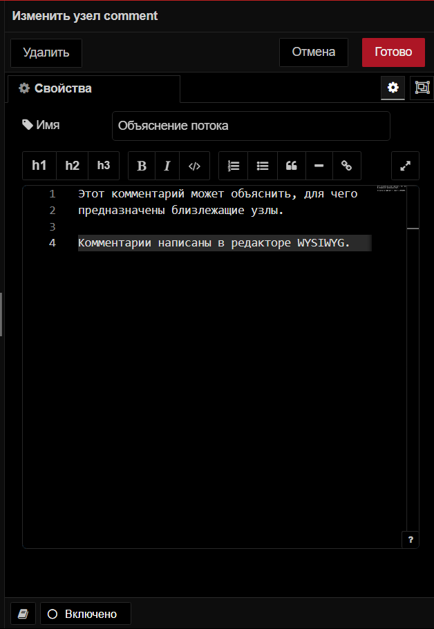